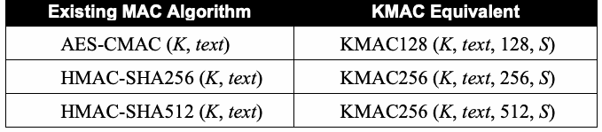

NIST Special Publication · PDF 原文抽出
SHA-3 Derived Functions: cSHAKE, KMAC, TupleHash, and ParallelHash
SHA-3派生関数：cSHAKE、KMAC、TupleHash、ParallelHash
NIST SP 800-185（SHA-3 Derived Functions: cSHAKE, KMAC, TupleHash, and ParallelHash）の英文と日本語訳を段落ごとに並べた閲覧用ページです。FIPS 202由来のcSHAKE、KMAC、TupleHash、ParallelHashを定義し、128ビットおよび256ビットのセキュリティ強度に対応する仕様を示します。 翻訳は非公式です。要件の確認にはNIST の正式版 PDFを参照してください。
PDF から抽出した原文は原本との照合待ちです。
PDF p.14: 原本画像で一段組を確認。cSHAKE式の末尾や00が別ブロックに分断されていたため、式を照合してreview_noteに記録。
PDF p.30: 原本画像で一段組を確認。ParallelHash256条件とn計算式の天井記号⌈ ⌉が別ブロックに分断されていたため、式を照合してreview_noteに記録。
PDF p.31: 原本画像で範囲ハッシュ化手順とbits_to_integer式を照合。ceil記号、添字、指数、関数記号が分断・崩れていたため復元し、該当ブロックにreview_noteを記録。
NIST Special Publication 800-185
NIST特別刊行物800-185
未レビュー訳SHA-3 Derived Functions:
SHA-3派生関数：
未レビュー訳cSHAKE, KMAC, TupleHash and ParallelHash
cSHAKE、KMAC、TupleHash、ParallelHash
未レビュー訳John Kelsey Shu-jen Chang Ray Perlner
John Kelsey、Shu-jen Chang、Ray Perlner
未レビュー訳This publication is available free of charge from: https://doi.org/10.6028/NIST.SP.800-185
本刊行物は次のURLから無料で入手できます：https://doi.org/10.6028/NIST.SP.800-185
未レビュー訳C O M P U T E R S E C U R I T Y
コンピューターセキュリティ

NIST（米国国立標準技術研究所）のロゴ。National Institute of Standards and Technology。
NIST Special Publication 800-185
NIST特別刊行物800-185
未レビュー訳SHA-3 Derived Functions:
SHA-3派生関数：
未レビュー訳cSHAKE, KMAC, TupleHash and ParallelHash
cSHAKE、KMAC、TupleHash、ParallelHash
未レビュー訳John Kelsey Shu-jen Chang Ray Perlner
John Kelsey、Shu-jen Chang、Ray Perlner
未レビュー訳Computer Security Division Information Technology Laboratory
コンピューターセキュリティ部門、情報技術研究所
未レビュー訳This publication is available free of charge from: https://doi.org/10.6028/NIST.SP.800-185
本刊行物は次のURLから無料で入手できます：https://doi.org/10.6028/NIST.SP.800-185
未レビュー訳December 2016
2016年12月
未レビュー訳U.S. Department of Commerce Penny Pritzker, Secretary
米国商務省 長官 ペニー・プリツカー
未レビュー訳National Institute of Standards and Technology
米国国立標準技術研究所（NIST）
未レビュー訳Willie May, Under Secretary of Commerce for Standards and Technology and Director
ウィリー・メイ、標準・技術担当商務次官兼所長
未レビュー訳Authority
権限
未レビュー訳This publication has been developed by NIST in accordance with its statutory responsibilities under the Federal Information Security Modernization Act (FISMA) of 2014, 44 U.S.C. § 3551 et seq., Public Law (P.L.) 113-283. NIST is responsible for developing information security standards and guidelines, including minimum requirements for federal information systems, but such standards and guidelines shall not apply to national security systems without the express approval of appropriate federal officials exercising policy authority over such systems. This guideline is consistent with the requirements of the Office of Management and Budget (OMB) Circular A-130.
本刊行物は、2014年連邦情報セキュリティ近代化法（FISMA）、合衆国法典第44編第3551条以下、および公法113-283に基づく法的責任に従ってNISTが作成したものである。NISTは、連邦情報システムの最低要件を含む情報セキュリティ標準およびガイドラインを策定する責任を負う。ただし、適切な政策権限を有する連邦当局者の明示的な承認がない限り、これらの標準およびガイドラインを国家安全保障システムに適用してはならない。本ガイドラインは、行政管理予算局（OMB）通達A-130の要件に沿っている。
未レビュー訳Nothing in this publication should be taken to contradict the standards and guidelines made mandatory and binding on federal agencies by the Secretary of Commerce under statutory authority. Nor should these guidelines be interpreted as altering or superseding the existing authorities of the Secretary of Commerce, Director of the OMB, or any other federal official. This publication may be used by nongovernmental organizations on a voluntary basis and is not subject to copyright in the United States. Attribution would, however, be appreciated by NIST.
本刊行物のいかなる記述も、法的権限に基づき商務長官が連邦機関に義務付け、拘束力を持たせた標準およびガイドラインに反するものと解釈してはならない。また、本ガイドラインを、商務長官、OMB長官、その他の連邦当局者が有する既存の権限を変更または無効にするものと解釈してはならない。本刊行物は非政府組織が任意に利用でき、米国内では著作権の対象ではない。ただし、NISTへの出典表示を歓迎する。
未レビュー訳National Institute of Standards and Technology Special Publication 800-185 Natl. Inst. Stand. Technol. Spec. Publ. 800-185, 32 pages (December 2016) CODEN: NSPUE2
米国国立標準技術研究所 特別刊行物800-185。国立標準技術研究所 特別刊行物800-185、全32ページ（2016年12月）。CODEN: NSPUE2
未レビュー訳This publication is available free of charge from: https://doi.org/10.6028/NIST.SP.800-185
本刊行物は次のURLから無料で入手できます：https://doi.org/10.6028/NIST.SP.800-185
未レビュー訳原本PDFの抜粋画像

Comments on this publication may be submitted to:
本刊行物への意見は、次の宛先に提出できます：
National Institute of Standards and Technology Attn: Computer Security Division, Information Technology Laboratory 100 Bureau Drive (Mail Stop 8930) Gaithersburg, MD 20899-8930 Email: SP800-185@nist.gov
米国国立標準技術研究所 宛先：コンピューターセキュリティ部門、情報技術研究所 100 Bureau Drive（Mail Stop 8930）Gaithersburg, MD 20899-8930 メール：SP800-185@nist.gov
未レビュー訳All comments are subject to release under the Freedom of Information Act (FOIA).
すべての意見は、情報公開法（FOIA）に基づく公開の対象となる。
Reports on Computer Systems Technology
コンピューターシステム技術に関する報告書
The Information Technology Laboratory (ITL) at the National Institute of Standards and Technology (NIST) promotes the U.S. economy and public welfare by providing technical leadership for the Nation’s measurement and standards infrastructure. ITL develops tests, test methods, reference data, proof of concept implementations, and technical analyses to advance the development and productive use of information technology. ITL’s responsibilities include the development of management, administrative, technical, and physical standards and guidelines for the cost-effective security and privacy of other than national security-related information in federal information systems. The Special Publication 800-series reports on ITL’s research, guidelines, and outreach efforts in information system security, and its collaborative activities with industry, government, and academic organizations.
米国国立標準技術研究所（NIST）の情報技術研究所（ITL）は、米国の測定・標準基盤に技術的なリーダーシップを発揮し、米国経済と公共の福祉を促進している。ITLは、情報技術の発展と有効活用を進めるため、試験、試験方法、参照データ、概念実証の実装、および技術分析を行う。ITLの責務には、国家安全保障に関係しない連邦情報システムにおける情報のセキュリティとプライバシーを費用対効果よく確保するための管理上、運用上、技術上および物理的な標準・ガイドラインの策定が含まれる。特別刊行物800シリーズは、情報システムセキュリティに関するITLの研究、ガイドライン、普及活動、ならびに産業界、政府、学術機関との協力活動を報告する。
未レビュー訳Abstract
概要
This Recommendation specifies four types of SHA-3-derived functions: cSHAKE, KMAC, TupleHash, and ParallelHash, each defined for a 128- and 256-bit security strength. cSHAKE is a customizable variant of the SHAKE function, as defined in Federal Information Processing Standard (FIPS) 202. KMAC (for KECCAK Message Authentication Code) is a variable-length message authentication code algorithm based on KECCAK; it can also be used as a pseudorandom function. TupleHash is a variable-length hash function designed to hash tuples of input strings without trivial collisions. ParallelHash is a variable-length hash function that can hash very long messages in parallel.
本勧告は、SHA-3派生関数として、cSHAKE、KMAC、TupleHash、ParallelHashの4種類を規定する。それぞれ128ビットおよび256ビットのセキュリティ強度について定義されている。cSHAKEは、連邦情報処理標準（FIPS）202で定義されるSHAKE関数をカスタマイズ可能にしたものである。KMAC（KECCAKメッセージ認証コード）は、KECCAKに基づく可変長メッセージ認証コードアルゴリズムであり、疑似乱数関数としても使用できる。TupleHashは、入力文字列のタプルを単純な衝突が起きないようにハッシュ化するために設計された可変長ハッシュ関数である。ParallelHashは、非常に長いメッセージを並列にハッシュ化できる可変長ハッシュ関数である。
未レビュー訳Keywords
キーワード
未レビュー訳authentication; cryptography; cSHAKE; customizable SHAKE function; hash function; information security; integrity; KECCAK; KMAC; message authentication code; parallel hashing; ParallelHash; PRF; pseudorandom function; SHA-3; SHAKE; tuple hashing; TupleHash.
認証、暗号技術、cSHAKE、カスタマイズ可能なSHAKE関数、ハッシュ関数、情報セキュリティ、完全性、KECCAK、KMAC、メッセージ認証コード、並列ハッシュ化、ParallelHash、PRF、疑似乱数関数、SHA-3、SHAKE、タプルハッシュ化、TupleHash。
未レビュー訳Acknowledgements
謝辞
未レビュー訳The authors thank the KECCAK team members: Guido Bertoni, Joan Daemen, Michaël Peeters, and Gilles Van Assche, for their feedback. The authors also thank their colleagues for reviewing drafts of this document and contributing to its development.
著者は、フィードバックを寄せてくださったKECCAKチームのGuido Bertoni、Joan Daemen、Michaël Peeters、Gilles Van Assche各氏に感謝する。また、本書の草稿を査読し、作成に協力した同僚にも感謝する。
未レビュー訳Table of Contents
目次
未レビュー訳1 Introduction — 1
1 はじめに — 1
未レビュー訳2 Glossary — 3
2 用語集 — 3
未レビュー訳2.1 Terms and Acronyms — 3
2.1 用語と略語 — 3
未レビュー訳2.2 Basic Operations — 4
2.2 基本演算 — 4
未レビュー訳2.3 Other Internal Functions — 4
2.3 その他の内部関数 — 4
未レビュー訳2.3.1 Integer to Byte String Encoding — 5
2.3.1 整数からバイト列への符号化 — 5
未レビュー訳2.3.2 String Encoding — 5
2.3.2 文字列の符号化 — 5
未レビュー訳2.3.3 Padding — 6
2.3.3 パディング — 6
未レビュー訳2.3.4 Substrings — 6
2.3.4 部分文字列 — 6
未レビュー訳3 cSHAKE — 7
3 cSHAKE — 7
未レビュー訳3.1 Overview — 7
3.1 概要 — 7
未レビュー訳3.2 Parameters — 7
3.2 パラメーター — 7
未レビュー訳3.3 Definition — 8
3.3 定義 — 8
3.4 Using the Function-Name Input — 8
3.4 関数名入力の使用 — 8
3.5 Using the Customization String — 9
3.5 カスタマイズ文字列の使用 — 9
未レビュー訳4 KMAC — 10
4 KMAC — 10
未レビュー訳4.1 Overview — 10
4.1 概要 — 10
4.2 Parameters — 10
4.2 パラメーター — 10
未レビュー訳4.3 Definition — 10
4.3 定義 — 10
未レビュー訳4.3.1 KMAC with Arbitrary-Length Output — 11
4.3.1 任意長出力のKMAC — 11
未レビュー訳5 TupleHash — 12
5 TupleHash — 12
未レビュー訳5.1 Overview — 12
5.1 概要 — 12
未レビュー訳5.2 Parameters — 12
5.2 パラメーター — 12
5.3 Definition — 12
5.3 定義 — 12
未レビュー訳5.3.1 TupleHash with Arbitrary-Length Output — 13
5.3.1 任意長出力のTupleHash — 13
未レビュー訳6 ParallelHash — 14
6 ParallelHash — 14
未レビュー訳6.1 Overview — 14
6.1 概要 — 14
未レビュー訳6.2 Parameters — 14
6.2 パラメーター — 14
未レビュー訳6.3 Definition — 14
6.3 定義 — 14
6.3.1 ParallelHash with Arbitrary-Length Output — 15
6.3.1 任意長出力のParallelHash — 15
未レビュー訳7 Implementation Considerations — 17
7 実装上の考慮事項 — 17
未レビュー訳7.1 Precomputation — 17
7.1 事前計算 — 17
未レビュー訳7.2 Limited Implementations — 17
7.2 制限された実装 — 17
未レビュー訳7.3 Exploiting Parallelism in ParallelHash — 17
7.3 ParallelHashにおける並列処理の活用 — 17
未レビュー訳8 Security Considerations — 19
8 セキュリティ上の考慮事項 — 19
未レビュー訳8.1 Claimed Security Strength — 19
8.1 主張されるセキュリティ強度 — 19
未レビュー訳8.2 Security Properties for the Function-Name and Customization Strings — 19
8.2 関数名およびカスタマイズ文字列のセキュリティ特性 — 19
8.2.1 Equivalent Security to SHAKE for Any Legal N and S — 19
8.2.1 許容される任意のNおよびSに対するSHAKEと同等のセキュリティ — 19
8.2.2 Different N and S Give Unrelated Outputs — 19
8.2.2 異なるNおよびSは相互に無関係な出力を生成 — 19
未レビュー訳8.3 Collisions and Preimages — 20
8.3 衝突と原像 — 20
8.4 Guidance for Using KMAC Securely — 20
8.4 KMACを安全に使用するための指針 — 20
未レビュー訳8.4.1 KMAC Key Length — 20
8.4.1 KMACの鍵長 — 20
未レビュー訳8.4.2 KMAC Output Length — 20
8.4.2 KMACの出力長 — 20
未レビュー訳List of Appendices
付録一覧
未レビュー訳Appendix A— KMAC, TupleHash, and ParallelHash in Terms of KECCAK[c] — 22
付録A — KECCAK[c]によるKMAC、TupleHashおよびParallelHash — 22
未レビュー訳Appendix B— Hashing into a Range (Informative) — 25
付録B — 範囲内へのハッシュ化（参考情報） — 25
未レビュー訳Appendix C— References — 26
付録C — 参考文献 — 26
List of Tables
表一覧
未レビュー訳Table 1: Equivalent security settings for KMAC and previously standardized MAC
表1：KMACと従来標準化されたMAC
未レビュー訳algorithms — 21
アルゴリズムの同等のセキュリティ設定 — 21
未レビュー訳1 Introduction
1 はじめに
未レビュー訳Federal Information Processing Standard (FIPS) 202, SHA-3 Standard: Permutation-Based Hash and Extendable-Output Functions [1], defines four fixed-length hash functions (SHA3-224, SHA3-256, SHA3-384, and SHA3-512), and two eXtendable Output Functions (XOFs), SHAKE128 and SHAKE256. These SHAKE (Secure Hash Algorithm KECCAK) functions are a new kind of cryptographic primitive; unlike earlier hash functions, they are named for their expected security strength.
連邦情報処理標準（FIPS）202「SHA-3標準：置換ベースのハッシュ関数および拡張可能出力関数」[1]は、固定長ハッシュ関数4種類（SHA3-224、SHA3-256、SHA3-384、SHA3-512）と、拡張可能出力関数（XOF）2種類（SHAKE128、SHAKE256）を定義している。これらのSHAKE（Secure Hash Algorithm KECCAK）関数は新しい種類の暗号プリミティブである。従来のハッシュ関数とは異なり、想定されるセキュリティ強度にちなんで命名されている。
未レビュー訳FIPS 202 also supports a flexible scheme for domain separation between different functions derived from KECCAK—the algorithm [2] on which the SHA-3 Standard is based. Domain separation ensures that different named functions (such as SHA3-512 and SHAKE128) will be unrelated. cSHAKE—the customizable version of SHAKE—extends this scheme to allow users to customize their use of the function, as described below.
FIPS 202は、SHA-3標準の基礎となるアルゴリズム[2]であるKECCAKから派生する異なる関数間の柔軟なドメイン分離方式もサポートしている。ドメイン分離により、SHA3-512やSHAKE128のような異なる名前の関数が相互に無関係であることが保証される。SHAKEのカスタマイズ可能版であるcSHAKEは、以下で説明するように、この方式を拡張し、利用者が関数の使い方をカスタマイズできるようにする。
未レビュー訳Customization is analogous to strong typing in a programming language; such customization makes it extremely unlikely that computing one function with two different customization strings will yield the same answer. Thus, two cSHAKE computations with different customization strings (for example, a key fingerprint and an email signature) are unrelated: knowing one of these results will give an attacker no information about the other.
カスタマイズは、プログラミング言語における強い型付けに似ている。このようなカスタマイズにより、異なるカスタマイズ文字列を使って計算した関数が同じ結果を返す可能性は極めて低くなる。したがって、異なるカスタマイズ文字列（例えば鍵のフィンガープリントと電子メール署名）を用いた2つのcSHAKE計算は相互に無関係である。一方の結果を知っても、攻撃者はもう一方について何の情報も得られない。
This Recommendation defines two cSHAKE variants, cSHAKE128 and cSHAKE256, in Sec. 3, based on the KECCAK[c] sponge function [3] defined in FIPS 202. It then defines three additional SHA-3-derived functions, in Secs. 4 through 6, that provide new functionality not directly available from the more basic functions. They are:
本勧告は、FIPS 202で定義されるKECCAK[c]スポンジ関数[3]に基づき、3節でcSHAKE128およびcSHAKE256の2つの変種を定義する。続いて4節から6節で、より基本的な関数では直接提供されない機能を実現する、SHA-3派生関数をさらに3種類定義する。これらは次のとおりである。
未レビュー訳•KMAC1281 and KMAC256, providing pseudorandom functions (PRFs) and keyed hash functions with variable-length outputs;
•KMAC128¹およびKMAC256：疑似乱数関数（PRF）と、可変長出力を持つ鍵付きハッシュ関数を提供する。
未レビュー訳•TupleHash128 and TupleHash256, providing functions that hash tuples of input strings unambiguously2; and
•TupleHash128およびTupleHash256：入力文字列のタプルを曖昧さなくハッシュ化する関数を提供します²。
未レビュー訳•ParallelHash128 and ParallelHash256, providing efficient hash functions to hash long messages more quickly by taking advantage of parallelism in the processors.
•ParallelHash128およびParallelHash256：プロセッサーの並列処理を活用し、長いメッセージをより高速にハッシュ化する効率的な関数を提供する。
All four functions defined in this Recommendation—cSHAKE, KMAC, TupleHash, and ParallelHash—have these properties in common:
本勧告で定義する4つの関数（cSHAKE、KMAC、TupleHash、ParallelHash）には、次の共通特性がある。
•They are all derived from the functions specified in FIPS 202.
•いずれもFIPS 202で規定された関数から派生している。
•All the functions except cSHAKE are defined in terms of cSHAKE.
•cSHAKEを除くすべての関数は、cSHAKEに基づいて定義されている。
未レビュー訳•All support user-defined customization strings.
•いずれも利用者定義のカスタマイズ文字列をサポートする。
未レビュー訳•All support variable-length outputs of any bit length. KMAC, TupleHash, and ParallelHash have the additional property that any change in the requested output length completely changes the function. Even with identical inputs otherwise, any of these functions, when called with different requested output lengths, will, in general, yield unrelated outputs.
•いずれも任意のビット長の可変長出力をサポートする。KMAC、TupleHash、ParallelHashには、要求する出力長を変更すると関数の結果が完全に変わるという追加特性がある。他の入力が同一であっても、これらの関数を異なる出力長で呼び出すと、一般に相互に無関係な出力が得られる。
未レビュー訳•All support two security strengths: 128 and 256 bits.
•いずれも2種類のセキュリティ強度（128ビットおよび256ビット）をサポートする。
未レビュー訳These functions are detailed in the specific sections below. In addition, a method is specified in Appendix B to facilitate using these functions to produce output that is almost uniformly distributed on the integers {0, 1, 2, ..., R−1} for any positive integer R.
これらの関数の詳細は、以下の各節で説明する。さらに付録Bでは、任意の正整数Rについて、整数{0, 1, 2, ..., R−1}上でほぼ一様に分布する出力をこれらの関数で生成する方法を規定する。
未レビュー訳2 Glossary
2 用語集
未レビュー訳In this document, bits are indicated in the
本書では、ビットを
未レビュー訳font. Bytes are typically written as two-
Courier Newフォントで示す。バイトは通常、2桁の
未レビュー訳Courier New digit hexadecimal numbers from the ASCII characters 0 through 9 and A through F, preceded by
16進数で記述する。数字にはASCII文字の0～9およびA～Fを使い、その前に
未レビュー訳the prefix “0x”. In binary representation, bytes are written with the low-order bit first, while in hexadecimal representation, bytes are written with the high-order digit first. E.g., 0x01 =
接頭辞「0x」を付ける。2進表記ではバイトを下位ビットから記述し、16進表記では上位桁から記述する。例えば、0x01 = 10000000
未レビュー訳and 0x80 =
および0x80 = 00000001
未レビュー訳. These bit-ordering conventions follow the conventions
。これらのビット順序規約は、
未レビュー訳10000000
原文のみ
00000001
原文のみ
established in Sec. B.1 of FIPS 202. Character strings appear in this document in double-quotes. Character strings are interpreted as bit strings whose length is a multiple of 8 bits, consisting of a 0 bit, followed by the 7-bit ASCII representation of each successive character.
FIPS 202のB.1節に定められた規約に従う。文字列は本書では二重引用符で囲んで表記する。文字列は長さが8ビットの倍数のビット列として解釈し、0ビットに続けて各文字の7ビットASCII表現を並べたものである。
未レビュー訳2.1 Terms and Acronyms
2.1 用語と略語
未レビュー訳Bit
ビット
未レビュー訳A binary digit: or .
二進数の1桁：
未レビュー訳0 1
0または1。
未レビュー訳CMAC
CMAC
未レビュー訳Cipher-based Message Authentication Code.
暗号方式に基づくメッセージ認証コード。
未レビュー訳cSHAKE
cSHAKE
未レビュー訳The customizable SHAKE function.
カスタマイズ可能なSHAKE関数。
未レビュー訳Domain Separation
ドメイン分離
未レビュー訳For a function, a partitioning of the inputs to different application domains so that no input is assigned to more than one domain.
関数の入力を異なるアプリケーションドメインに分割し、1つの入力が複数のドメインに割り当てられないようにすること。
未レビュー訳eXtendable-Output
拡張可能出力
未レビュー訳A function on bit strings in which the output can be extended to
ビット列に作用し、出力を
未レビュー訳Function (XOF)
関数（XOF）
未レビュー訳any desired length.
任意の長さに拡張できる関数。
未レビュー訳FIPS
FIPS
未レビュー訳Federal Information Processing Standard.
連邦情報処理標準。
未レビュー訳Hash Function
ハッシュ関数
未レビュー訳A function on bit strings in which the length of the output is fixed. The output often serves as a condensed representation of the input.
出力長が固定されたビット列上の関数である。出力は、入力を簡潔に表したものとして使われることがよくある。
未レビュー訳HMAC
HMAC
未レビュー訳Keyed-Hash Message Authentication Code.
鍵付きハッシュメッセージ認証コード。
未レビュー訳KECCAK
KECCAK
未レビュー訳The family of all sponge functions with a KECCAK-f permutation as the underlying function and multi-rate padding as the padding rule. KECCAK was originally specified in [2], and standardized in
KECCAK-f置換を基礎関数とし、多率パディングをパディング規則とする、すべてのスポンジ関数の族である。KECCAKは当初[2]で規定され、
未レビュー訳FIPS 202.
FIPS 202で標準化された。
未レビュー訳KMAC
KMAC
未レビュー訳KECCAK Message Authentication Code.
KECCAKメッセージ認証コード。
未レビュー訳MAC
MAC
未レビュー訳Message Authentication Code.
メッセージ認証コード。
未レビュー訳NIST
NIST
未レビュー訳National Institute of Standards and Technology.
米国国立標準技術研究所。
未レビュー訳PRF
PRF
未レビュー訳See Pseudorandom Function.
疑似乱数関数を参照。
未レビュー訳Pseudorandom Function A function that can be used to generate output from a random (PRF)
疑似乱数関数（PRF）：ランダムなシードから出力を生成できる関数であり、
未レビュー訳seed such that the output is computationally indistinguishable from truly random output.
出力が真にランダムな出力と計算量的に区別できないようにするものである。
未レビュー訳In the sponge construction, the number of input bits processed
スポンジ構成において、基礎関数の
未レビュー訳Rate
レート（Rate）は、
未レビュー訳per invocation of the underlying function.
1回の呼び出しで処理される入力ビット数である。
未レビュー訳SHA-3
SHA-3
未レビュー訳Secure Hash Algorithm-3.
セキュアハッシュアルゴリズム3。
未レビュー訳Sponge Construction
スポンジ構成
未レビュー訳The method originally specified in [3] for defining a function from the following: 1) an underlying function on bit strings of a fixed length, 2) a padding rule, and 3) a rate. Both the input and the output of the resulting function are bit strings that can be arbitrarily long.
[3]で当初規定された方法であり、次の要素から関数を定義する：1）固定長ビット列上の基礎関数、2）パディング規則、3）レート。この方法で得られる関数の入力と出力はいずれも任意長のビット列である。
未レビュー訳Sponge Function
スポンジ関数
未レビュー訳A function that is defined according to the sponge construction, possibly specialized to a fixed output length.
スポンジ構成に従って定義され、出力長を固定するよう特化される場合もある関数。
未レビュー訳String
文字列
未レビュー訳A sequence of bits.
ビットの列。
未レビュー訳XOF
XOF
未レビュー訳See eXtendable-Output Function.
拡張可能出力関数を参照。
未レビュー訳2.2 Basic Operations
2.2 基本演算
未レビュー訳For a real number x, x the least integer that is not strictly less than
実数xに対して、⌈x⌉はxを下回らない最小の整数である。例えば、⌈3.2⌉=4、⌈−3.2⌉=−3、⌈6⌉=6である。
未レビュー訳原文のみ
x. For example, 3.2 = 4, −3.2 = −3, and 6 =6. ⌈ ⌉ is
原文のみ
⌈ ⌉
原文のみ
For a positive in⌈tege⌉r s, ⌈s is th⌉e string tha⌈t ⌉consists of s consecutive 0
正整数sに対して、0^sはs個連続する0ビットから成る文字列である。
未レビュー訳s 0
原文のみ
原文のみ
bits.
原文のみ
a mod b
a mod b
未レビュー訳The modulo operation of integers a and b. “a mod b” returns the remainder after dividing a by b.
整数aおよびbに対する剰余演算である。「a mod b」は、aをbで割った余りを返す。
未レビュー訳enc8(i)
enc8(i)
未レビュー訳For an integer i ranging from 0 to 255, enc8(i) is the byte encoding of i, with bit 0 being the low-order bit of the byte.
整数iが0から255までのとき、enc8(i)はiのバイト符号化である。このバイトでは、ビット0が最下位ビットである。
未レビュー訳len(X)
len(X)
未レビュー訳For a bit string X, len(X) is the length of X in bits.
ビット列Xについて、len(X)はXのビット長である。
未レビュー訳X || Y
X || Y
未レビュー訳For strings X and Y, X || Y is the concatenation of X and Y. For example,
文字列XおよびYについて、X || YはXとYを連結したものである。例えば、11001 || 010 = 11001010である。
未レビュー訳原文のみ
原文のみ
11001 010 11001010
原文のみ
原文のみ
2.3 Other Internal Functions
2.3 その他の内部関数
未レビュー訳This section describes the string encoding, padding and substring functions used in the definition of the SHA-3-derived functions.
本節では、SHA-3派生関数の定義で使用する文字列符号化、パディング、および部分文字列関数について説明する。
未レビュー訳2.3.1 Integer to Byte String Encoding
2.3.1 整数からバイト列への符号化
Two internal functions, left_encode and right_encode, are defined to encode integers as byte strings. Both functions can encode integers up to an extremely large maximum, 22040−1.
整数をバイト列として符号化するため、2つの内部関数left_encodeおよびright_encodeを定義する。どちらの関数も、非常に大きな最大値である2^2040−1までの整数を符号化できる。
未レビュー訳left_encode(x) encodes the integer x as a byte string in a way that can be unambiguously parsed from the beginning of the string by inserting the length of the byte string before the byte string representation of x.
left_encode(x)は、xのバイト列表現の前にそのバイト列の長さを挿入し、文字列の先頭から曖昧さなく解析できるように、整数xをバイト列として符号化する。
未レビュー訳right_encode(x) encodes the integer x as a byte string in a way that can be unambiguously parsed from the end of the string by inserting the length of the byte string after the byte string representation of x.
right_encode(x)は、xのバイト列表現の後にそのバイト列の長さを挿入し、文字列の末尾から曖昧さなく解析できるように、整数xをバイト列として符号化する。
未レビュー訳Using the function enc () to encode the individual bytes, these two functions are defined as
各バイトの符号化には関数enc_8()を用い、これら2つの関数を
未レビュー訳原文のみ
follows:
次のように定義されます：
未レビュー訳right_encode(x): Validity Conditions: 0 ≤ x < 22040
right_encode(x)：妥当性条件：0 ≤ x < 2^2040
未レビュー訳1.Let n be the smallest positive integer for which 28n > x.
1.nを、2^{8n} > xとなる最小の正整数とする。
未レビュー訳2.Let x , x ,…, x be the base-256 encoding of x satisfying: 1 2 n x = ∑ 28(n-i)x , for i = 1 to n.i
2.x₁, x₂, …, xₙを、次の条件を満たすxの256進表現とする：x = Σ_{i=1}^{n} 2^{8(n−i)}xᵢ。
未レビュー訳3.Let O = enc (x ), for i = 1 to n. i 8 i
3.i = 1からnについて、Oᵢ = enc₈(xᵢ)とする。
未レビュー訳4.Let O = enc (n). n+1 8
4.Oₙ₊₁ = enc₈(n)とする。
未レビュー訳5.Return O = O || O || … || O || O .1 2 n n+1
5.O = O₁ || O₂ || … || Oₙ || Oₙ₊₁を返す。
未レビュー訳left_encode(x): Validity Conditions: 0 ≤ x < 22040
left_encode(x)：妥当性条件：0 ≤ x < 2^2040
未レビュー訳1.Let n be the smallest positive integer for which 28n > x.
1.nを、2^{8n} > xとなる最小の正整数とする。
未レビュー訳2.Let x , x , …, x be the base-256 encoding of x satisfying: 1 2 n x = ∑ 28(n-i)x , for i = 1 to n. i
2.x₁, x₂, …, xₙを、次の条件を満たすxの256進表現とする：x = Σ_{i=1}^{n} 2^{8(n−i)}xᵢ。
未レビュー訳3.Let O = enc (x ), for i = 1 to n. i 8 i
3.i = 1からnについて、Oᵢ = enc₈(xᵢ)とする。
未レビュー訳4.Let O = enc (n). 0 8
4.O₀ = enc₈(n)とする。
未レビュー訳5.Return O = O || O || … || O || O .
5.O = O₀ || O₁ || … || Oₙ₋₁ || Oₙを返す。
未レビュー訳As an example, encode_string(S) where S is the empty string "" will yield
例として、Sが空文字列""の場合、encode_string(S)は10000000 00000000を出力する。
未レビュー訳10000000
原文のみ
原文のみ
00000000
原文のみ
Note that if the bit string S is not byte-oriented (i.e., len(S) is not a multiple of 8), the bit string returned from encode_string(S) is also not byte-oriented. However, if len(S) is a multiple of 8, then the length of the output of encode_string(S) will also be a multiple of 8.
ビット列Sがバイト単位ではない（すなわちlen(S)が8の倍数ではない）場合、encode_string(S)が返すビット列もバイト単位ではない。一方、len(S)が8の倍数であれば、encode_string(S)の出力長も8の倍数になる。
2.3.3 Padding
2.3.3 パディング
The bytepad(X, w) function prepends an encoding of the integer w to an input string X, then pads the result with zeros until it is a byte string whose length in bytes is a multiple of w. In general, bytepad is intended to be used on encoded strings—the byte string bytepad(encode_string(S), w) can be parsed unambiguously from its beginning, whereas bytepad does not provide unambiguous padding for all input strings.
bytepad(X, w)関数は、整数wの符号化を入力文字列Xの前に付加し、その結果を、バイト単位の長さがwの倍数であるバイト列になるまでゼロでパディングする。一般にbytepadは、符号化済み文字列に対して使用することを意図している。バイト列bytepad(encode_string(S), w)は先頭から曖昧さなく解析できるが、bytepadはすべての入力文字列について曖昧さのないパディングを提供するわけではない。
The definition of bytepad() is as follows:
bytepad()を次のように定義します：
未レビュー訳bytepad(X, w): Validity Conditions: w > 0
bytepad(X, w)：妥当性条件：w > 0
未レビュー訳1.z = left_encode(w) || X.
1.z = left_encode(w) || X。
未レビュー訳2.while len(z) mod 8 ≠ 0: z = z || 0
2.len(z) mod 8 ≠ 0である間、z = z || 0とする。
未レビュー訳3.while (len(z)/8) mod w ≠ 0: z = z || 00000000
3.(len(z)/8) mod w ≠ 0である間、z = z || 00000000とする。
未レビュー訳4.return z.
4.zを返す。
未レビュー訳2.3.4 Substrings
2.3.4 部分文字列
Let parameters a and b be non-negative integers that denote a specific position in a bit string X. Informally, the substring(X, a, b) function returns a substring from the bit string X containing the values at bit positions a, a+1, ..., b−1, inclusive. More precisely, the substring function operates as defined below. Note that all bit positions in the input and output strings are indexed from zero. Thus, the first bit in a string is in position 0, and the last bit in an n-bit string is in position n−1.
ビット列X内の特定位置を表す、非負整数aおよびbをパラメーターとする。直感的には、substring(X, a, b)関数は、ビット位置a、a+1、…、b−1（b−1を含む）の値から成るXの部分文字列を返す。より正確には、substring関数は以下のように動作する。入力文字列と出力文字列のすべてのビット位置は0から数える。したがって、文字列の最初のビットは位置0にあり、nビット文字列の最後のビットは位置n−1にある。
未レビュー訳substring(X, a, b):
substring(X, a, b)：
未レビュー訳1.If a ≥ b or a ≥ len(X): return the empty string.
1.a ≥ bまたはa ≥ len(X)の場合、空文字列を返す。
未レビュー訳2.Else if b ≤ len(X): return the bits of X from position a to position b−1, inclusive.
2.それ以外でb ≤ len(X)の場合、位置aから位置b−1まで（b−1を含む）のXのビットを返す。
未レビュー訳3.Else: return the bits of X from position a to position len(X)−1, inclusive.
3.それ以外の場合、位置aから位置len(X)−1まで（len(X)−1を含む）のXのビットを返す。
未レビュー訳3 cSHAKE
3 cSHAKE
未レビュー訳3.1 Overview
3.1 概要
未レビュー訳The two variants of cSHAKE—cSHAKE128 and cSHAKE256—are defined in terms of the SHAKE and KECCAK[c] functions specified in FIPS 202. cSHAKE128 provides a 128-bit security strength, while cSHAKE256 provides a 256-bit security strength.
cSHAKEの2つの変種であるcSHAKE128およびcSHAKE256は、FIPS 202で規定されたSHAKE関数およびKECCAK[c]関数に基づいて定義されている。cSHAKE128は128ビットのセキュリティ強度を、cSHAKE256は256ビットのセキュリティ強度を提供する。
未レビュー訳3.2 Parameters
3.2 パラメーター
未レビュー訳Both cSHAKE functions take four parameters:
cSHAKE関数はどちらも4つのパラメーターを取ります：
•X is the main input bit string. It may be of any length3, including zero.
•Xは主入力ビット列である。長さは0を含め、任意である³。
未レビュー訳•L is an integer representing the requested output length4 in bits.
•Lは要求する出力長⁴をビット単位で表す整数である。
未レビュー訳•N is a function-name bit string, used by NIST to define functions based on cSHAKE. When no function other than cSHAKE is desired, N is set to the empty string.
•Nは関数名を表すビット列で、NISTがcSHAKEに基づく関数を定義するために使用する。cSHAKE以外の関数を使用しない場合、Nは空文字列に設定する。
未レビュー訳•S is a customization bit string. The user selects this string to define a variant of the function. When no customization is desired, S is set to the empty string5.
•Sはカスタマイズ用のビット列である。利用者はこの文字列を選択し、関数の変種を定義する。カスタマイズしない場合、Sは空文字列に設定する⁵。
未レビュー訳An implementation of cSHAKE may reasonably support only input strings and output lengths that are whole bytes; if so, a fractional-byte input string or a request for an output length that is not a multiple of 8 would result in an error.
cSHAKEの実装では、入力文字列と出力長をバイト単位の整数に限ってサポートすることも合理的である。その場合、端数バイトの入力文字列、または8の倍数でない出力長の要求はエラーとなる。
未レビュー訳When N and S are both empty strings, cSHAKE(X, L, N, S) is equivalent to SHAKE as defined in FIPS 202. Thus,
NおよびSがどちらも空文字列の場合、cSHAKE(X, L, N, S)はFIPS 202で定義されるSHAKEと等価である。したがって、
未レビュー訳cSHAKE128(X, L, "", "") = SHAKE128(X, L) and cSHAKE256(X, L, "", "") = SHAKE256(X, L).
cSHAKE128(X, L, "", "") = SHAKE128(X, L)、かつcSHAKE256(X, L, "", "") = SHAKE256(X, L)。
未レビュー訳cSHAKE is designed so that for any two instances:
cSHAKEは、任意の2つのインスタンスについて次の性質が成り立つよう設計されています：
未レビュー訳cSHAKE(X1, L1, N1, S1) and cSHAKE(X1, L1, N2, S2), unless N1 = N2 and S1 = S2, the two instances produce unrelated outputs. Note that this includes the case where N1 and S1 are empty strings. That is, cSHAKE with any customization is domain-separated from the ordinary SHAKE function specified in FIPS 202.
cSHAKE(X₁, L₁, N₁, S₁)およびcSHAKE(X₁, L₁, N₂, S₂)は、N₁ = N₂かつS₁ = S₂でない限り、相互に無関係な出力を生成する。これは、N₁とS₁が空文字列の場合も含む。つまり、カスタマイズを行うcSHAKEは、FIPS 202で規定された通常のSHAKEからドメイン分離される。
未レビュー訳3.3 Definition
3.3 定義
未レビュー訳cSHAKE is defined in terms of SHAKE or KECCAK[c], as follows: it either returns the result of a call to SHAKE (if N and S are both empty strings), or returns the result of a call to KECCAK(c) with a padded encoding of N and S concatenated to the input string X.
cSHAKEは、SHAKEまたはKECCAK[c]に基づいて、次のように定義される。NとSがともに空文字列の場合はSHAKEの呼出し結果を返し、それ以外の場合は、NとSをパディングして符号化したものを入力文字列Xに連結し、KECCAK(c)を呼び出した結果を返す。
未レビュー訳cSHAKE128(X, L, N, S): Validity Conditions: len(N)< 22040 and len(S)< 22040
cSHAKE128(X, L, N, S)：妥当性条件：len(N) < 2^2040かつlen(S) < 2^2040
未レビュー訳1.If N = "" and S = "": return SHAKE128(X, L);
1.N = ""かつS = ""の場合：SHAKE128(X, L)を返す。
未レビュー訳2.Else: return KECCAK[256](bytepad(encode_string(N) || encode_string(S), 168) || X ||
2.それ以外の場合：KECCAK[256](bytepad(encode_string(N) || encode_string(S), 168) || X || 00, L)を返す。
未レビュー訳, L).
原文のみ
原文のみ
cSHAKE256(X, L, N, S): Validity Conditions: len(N)< 22040 and len(S)< 22040
cSHAKE256(X, L, N, S)：妥当性条件：len(N) < 2^2040かつlen(S) < 2^2040
未レビュー訳1.If N = "" and S = "": return SHAKE256(X, L);
1.N = ""かつS = ""の場合：SHAKE256(X, L)を返す。
未レビュー訳2.Else: return KECCAK[512](bytepad(encode_string(N) || encode_string(S), 136) || X ||
2.それ以外の場合：KECCAK[512](bytepad(encode_string(N) || encode_string(S), 136) || X || 00, L)を返す。
未レビュー訳, L).
原文のみ
原文のみ
Note that the numbers 168 and 136 are rates (in bytes) of the KECCAK[256] and KECCAK[512] sponge functions, respectively; the characters in the
数値168および136は、それぞれKECCAK[256]およびKECCAK[512]スポンジ関数のレート（バイト単位）である。また、これらの定義において
未レビュー訳font in these definitions
Courier Newフォントで表記される文字
未レビュー訳00 Courier New
「00」は
未レビュー訳specify two zero bits.
2個のゼロビットを表す。
未レビュー訳3.4 Using the Function-Name Input
3.4 関数名入力の使用
未レビュー訳The cSHAKE function includes an input string that may be used to provide a function name (N). This is intended for use by NIST in defining SHA-3-derived functions, and should only be set to values defined by NIST6. This parameter provides a level of domain separation by function name. Users of cSHAKE should not make up their own names—that kind of customization is the purpose of the customization string S, to be discussed in Sec. 3.5. Nonstandard values of N could cause interoperability problems with future NIST-defined functions.
cSHAKE関数には、関数名（N）を指定するために使用できる入力文字列が含まれる。これはNISTがSHA-3派生関数を定義するためのものであり、NにはNISTが定義した値だけを設定する必要がある⁶。このパラメーターは、関数名によるドメイン分離を実現する。cSHAKEの利用者は独自の名前を作るべきではない。その種のカスタマイズには、3.5節で説明するカスタマイズ文字列Sを使用する。Nに標準外の値を指定すると、将来NISTが定義する関数との相互運用性に問題が生じる可能性がある。
未レビュー訳3.5 Using the Customization String
3.5 カスタマイズ文字列の使用
未レビュー訳The cSHAKE function also includes an input string (S) to allow users to customize their use of the function. For example, someone using cSHAKE128 to compute a key fingerprint (the hash value for a public key) might use:
cSHAKE関数には、利用者が関数の使い方をカスタマイズできるよう、入力文字列Sも含まれる。例えば、公開鍵のフィンガープリント（公開鍵のハッシュ値）を計算するためにcSHAKE128を使う場合、次のようにできる：
未レビュー訳cSHAKE128(public_key, 256, "", "key fingerprint"),
cSHAKE128(public_key, 256, "", "key fingerprint"),
未レビュー訳where "key fingerprint" is a customization string S.
ここで、"key fingerprint"はカスタマイズ文字列Sである。
未レビュー訳Later, the same user might decide to customize a different cSHAKE computation for signing an email:
後に、同じ利用者は電子メール署名用の別のcSHAKE計算をカスタマイズすることがあります：
未レビュー訳cSHAKE128(email_contents, 256, "", "email signature"),
cSHAKE128(email_contents, 256, "", "email signature"),
未レビュー訳where "email signature" is the customization string S.
ここで、"email signature"はカスタマイズ文字列Sである。
未レビュー訳The customization string is intended to avoid a collision between these two cSHAKE values—it will be very difficult for an attacker to somehow force one computation (the email signature) to yield the same result as the other computation (the key fingerprint) if different values of S are used.
カスタマイズ文字列は、これら2つのcSHAKE値の衝突を避けるためのものである。異なるSを使えば、一方の計算（電子メール署名）がもう一方の計算（鍵のフィンガープリント）と同じ結果になるよう攻撃者が強制することは、極めて困難である。
The customization string may be of any length less than 22040; however, implementations may restrict the length of S that they will accept.
カスタマイズ文字列の長さは任意であるが、2^2040未満でなければならない。ただし、実装は受け入れるSの長さを制限してもかまわない。
未レビュー訳4 KMAC
4 KMAC
未レビュー訳4.1 Overview
4.1 概要
未レビュー訳The KECCAK Message Authentication Code (KMAC) algorithm is a PRF and keyed hash function based on KECCAK. It provides variable-length output, and unlike SHAKE and cSHAKE, altering the requested output length generates a new, unrelated output. KMAC has two variants, KMAC128 and KMAC256, built from cSHAKE128 and cSHAKE256, respectively. The two variants differ somewhat in their technical security properties. Nonetheless, for most applications, both variants can support any security strength up to 256 bits of security, provided that a long enough key is used, as discussed in Sec. 8.4.1.
KECCAKメッセージ認証コード（KMAC）アルゴリズムは、KECCAKに基づくPRFおよび鍵付きハッシュ関数である。可変長出力を提供し、SHAKEやcSHAKEとは異なり、要求する出力長を変更すると、新たに相互に無関係な出力が生成される。KMACにはKMAC128とKMAC256の2つの変種があり、それぞれcSHAKE128とcSHAKE256から構成される。2つの変種は技術的なセキュリティ特性が多少異なる。それでも、8.4.1節で説明するとおり、十分に長い鍵を使用すれば、ほとんどの用途でどちらの変種も最大256ビットまでの任意のセキュリティ強度に対応できる。
未レビュー訳4.2 Parameters
4.2 パラメーター
未レビュー訳Both KMAC functions take the following parameters:
KMAC関数はどちらも、次のパラメーターを取ります：
•K is a key bit string of any length7, including zero.
•Kは任意の長さ（0を含む）の鍵ビット列です⁷。
未レビュー訳•X is the main input bit string. It may be of any length, including zero.
•Xは主入力ビット列である。長さは0を含め、任意である。
•L is an integer representing the requested output length8 in bits.
•Lは要求する出力長⁸をビット単位で表す整数である。
未レビュー訳•S is an optional customization bit string of any length, including zero. If no customization is desired, S is set to the empty string.
•Sは任意のカスタマイズ用ビット列であり、長さは0を含めて任意である。カスタマイズしない場合、Sは空文字列に設定する。
未レビュー訳4.3 Definition
4.3 定義
未レビュー訳KMAC concatenates a padded version of the key K with the input X and an encoding of the requested output length L. The result is then passed to cSHAKE, along with the requested output
KMACは、鍵Kをパディングしたものを入力Xおよび要求出力長Lの符号化と連結する。その結果をcSHAKEに渡す。ここでは、要求出力長L、名前N = "KMAC" = 11010010 10110010 10000010 11000010⁹、および任意のカスタマイズ文字列Sも指定する。
未レビュー訳9, and the
原文のみ
length L, the name N ="KMAC" =
原文のみ
11010010 10110010 10000010 11000010
原文のみ
optional customization string S.
原文のみ
KMAC128(K, X, L, S):
KMAC128(K, X, L, S)：
Validity Conditions: len(K) < 22040 and 0 ≤ L < 22040 and len(S) < 22040
妥当性条件：len(K) < 2^2040かつ0 ≤ L < 2^2040かつlen(S) < 2^2040
未レビュー訳1.newX = bytepad(encode_string(K), 168) || X || right_encode(L).
1.newX = bytepad(encode_string(K), 168) || X || right_encode(L)。
未レビュー訳2.return cSHAKE128(newX, L, “KMAC”, S).
2.cSHAKE128(newX, L, "KMAC", S)を返す。
KMAC256(K, X, L, S):
KMAC256(K, X, L, S)：
Validity Conditions: len(K) <22040 and 0 ≤ L < 22040 and len(S) < 22040
妥当性条件：len(K) < 2^2040かつ0 ≤ L < 2^2040かつlen(S) < 2^2040
未レビュー訳1.newX = bytepad(encode_string(K), 136) || X || right_encode(L).
1.newX = bytepad(encode_string(K), 136) || X || right_encode(L)。
未レビュー訳2.return cSHAKE256(newX, L, “KMAC”, S).
2.cSHAKE256(newX, L, "KMAC", S)を返す。
Note that the numbers 168 and 136 are rates (in bytes) of the KECCAK[256] and KECCAK[512] sponge functions, respectively.
数値168および136は、それぞれKECCAK[256]およびKECCAK[512]スポンジ関数のレート（バイト単位）である。
未レビュー訳4.3.1 KMAC with Arbitrary-Length Output
4.3.1 任意長出力のKMAC
未レビュー訳Some applications of KMAC may not know the number of output bits they will need until after the outputs begin to be produced. For these applications, KMAC can also be used as a XOF (i.e., the output can be extended to any desired length), which mimics the behavior of cSHAKE.
用途によっては、出力の生成が始まるまで必要な出力ビット数が分からない場合がある。そのような用途では、KMACをXOFとしても使用できる（すなわち、出力を任意の長さまで拡張できる）。この動作はcSHAKEに似ている。
When used as a XOF, KMAC is computed by setting the encoded output length to 0, as shown in right_encode(0) in Step 1 of the KMACXOF128(K, X, L, S) and KMACXOF256(K, X, L, S) pseudocodes below. Conceptually, KMAC in XOF mode produces an infinite-length output string, and the caller simply uses as many bits of the output string as are needed. Truncated outputs of KMAC in XOF mode can be computed by the function KMACXOF128(K, X, L, S) or KMACXOF256(K, X, L, S) given by the following pseudocode:
XOFとして使用する場合、KMACは符号化された出力長を0に設定して計算する。これは、以下のKMACXOF128(K, X, L, S)およびKMACXOF256(K, X, L, S)の擬似コードのステップ1におけるright_encode(0)に示されている。概念上、XOFモードのKMACは無限長の出力文字列を生成し、呼出し側は必要なビット数だけを使用する。XOFモードのKMAC出力を切り詰める場合は、以下の擬似コードで定義するKMACXOF128(K, X, L, S)またはKMACXOF256(K, X, L, S)関数で計算できる：
KMACXOF128(K, X, L, S):
KMACXOF128(K, X, L, S)：
Validity Conditions: len(K) < 22040 and 0 ≤ L and len(S) < 22040
妥当性条件：len(K) < 2^2040かつ0 ≤ L、かつlen(S) < 2^2040
未レビュー訳1.newX = bytepad(encode_string(K), 168) || X || right_encode(0).
1.newX = bytepad(encode_string(K), 168) || X || right_encode(0)。
未レビュー訳2.return cSHAKE128(newX, L, “KMAC”, S).
2.cSHAKE128(newX, L, "KMAC", S)を返す。
KMACXOF256(K, X, L, S):
KMACXOF256(K, X, L, S)：
Validity Conditions: len(K) <22040 and 0 ≤ L and len(S) < 22040
妥当性条件：len(K) < 2^2040かつ0 ≤ L、かつlen(S) < 2^2040
未レビュー訳1.newX = bytepad(encode_string(K), 136) || X || right_encode(0).
1.newX = bytepad(encode_string(K), 136) || X || right_encode(0)。
未レビュー訳2.return cSHAKE256(newX, L, “KMAC”, S).
2.cSHAKE256(newX, L, "KMAC", S)を返す。
5 TupleHash
5 TupleHash
未レビュー訳5.1 Overview
5.1 概要
未レビュー訳TupleHash is a SHA-3-derived hash function with variable-length output that is designed to simply hash a tuple of input strings, any or all of which may be empty strings, in an unambiguous way. Such a tuple may consist of any number of strings, including zero, and is represented as a sequence of strings or variables in parentheses like (“a”, “b”, “c”,...,“z”) in this document.
TupleHashは、空文字列を含む任意の入力文字列のタプルを曖昧さなく単純にハッシュ化するために設計された、SHA-3派生の可変長出力ハッシュ関数である。タプルは0個を含む任意個数の文字列から成り、本書では（"a"、"b"、"c"、…、"z"）のように、括弧内に文字列または変数を並べた列として表す。
TupleHash is designed to provide a generic, misuse-resistant way to combine a sequence of strings for hashing such that, for example, a TupleHash computed on the tuple ("abc" ,"d") will produce a different hash value than a TupleHash computed on the tuple ("ab","cd"), even though all the remaining input parameters are kept the same, and the two resulting concatenated strings, without string encoding, are identical.
TupleHashは、文字列列をハッシュ化のために組み合わせる、汎用的で誤用に強い方法を提供するよう設計されている。例えば、他の入力パラメーターがすべて同じであっても、タプル（"abc"、"d"）に対するTupleHashの値は、タプル（"ab"、"cd"）に対する値と異なる。文字列符号化を行わずに連結した文字列は同一であるが、結果のハッシュ値は異なる。
TupleHash supports two security strengths: 128 bits and 256 bits. Changing any input to the function, including the requested output length, will almost certainly change the final output.
TupleHashは、128ビットおよび256ビットの2種類のセキュリティ強度をサポートする。要求出力長を含め、関数への入力を変更すると、最終出力もほぼ確実に変化する。
未レビュー訳5.2 Parameters
5.2 パラメーター
未レビュー訳TupleHash takes the following parameters:
TupleHashは次のパラメーターを取ります：
•X is a tuple of zero or more bit strings, any or all of which may be an empty string.
•Xは0個以上のビット列から成るタプルであり、その一部またはすべてが空文字列でもかまわない。
•L is an integer representing the requested output length in bits.
•Lは要求する出力長をビット単位で表す整数である。
•S is an optional customization bit string of any length, including zero. If no customization is desired, S is set to the empty string.
•Sは任意の長さ（0を含む）のカスタマイズ用ビット列である。カスタマイズしない場合、Sは空文字列に設定する。
5.3 Definition
5.3 定義
未レビュー訳TupleHash encodes the sequence of input strings in an unambiguous way, then encodes the requested output length at the end of the string, and passes the result into cSHAKE, along with the function name (N) of “TupleHash” =
TupleHashは、入力文字列の列を曖昧さなく符号化し、次に要求出力長を文字列の末尾に符号化してから、その結果を関数名N = "TupleHash" = 00101010 10101110 00001110 00110110 10100110 00010010 10000110 11001110 00010110および任意のカスタマイズ文字列SとともにcSHAKEへ渡す。
未レビュー訳00101010 10101110 00001110 00110110
原文のみ
, and the optional
原文のみ
10100110 00010010 10000110 11001110 00010110 customization string S.
原文のみ
If X is a tuple of n bit strings, let X[i] be the ith bit string, numbering from 0. The TupleHash functions are defined in pseudocode as follows:
Xがn個のビット列から成るタプルである場合、X[i]を0から数えたi番目のビット列とする。TupleHash関数を次の擬似コードで定義する：
TupleHash128(X, L, S): Validity Conditions: 0 ≤ L < 22040 and len(S) < 22040
TupleHash128(X, L, S)：妥当性条件：0 ≤ L < 2^2040かつlen(S) < 2^2040
未レビュー訳1.z = "".
1.z = ""。
未レビュー訳2.n = the number of input strings in the tuple X.
2.nをタプルXに含まれる入力文字列の個数とする。
未レビュー訳3.for i = 1 to n: z = z || encode_string(X[i]).
3.i = 1からnについて、z = z || encode_string(X[i])とする。
未レビュー訳4.newX = z || right_encode(L).
4.newX = z || right_encode(L)。
未レビュー訳5.return cSHAKE128(newX, L, “TupleHash”, S).
5.cSHAKE128(newX, L, "TupleHash", S)を返す。
TupleHash256(X, L, S): Validity Conditions: 0 ≤ L < 22040 and len(S) < 22040
TupleHash256(X, L, S)：妥当性条件：0 ≤ L < 2^2040かつlen(S) < 2^2040
未レビュー訳1.z = "".
1.z = ""。
未レビュー訳2.n = the number of input strings in the tuple X.
2.nをタプルXに含まれる入力文字列の個数とする。
未レビュー訳3.for i = 1 to n: z = z || encode_string(X[i]).
3.i = 1からnについて、z = z || encode_string(X[i])とする。
未レビュー訳4.newX = z || right_encode(L).
4.newX = z || right_encode(L)。
未レビュー訳5.return cSHAKE256(newX, L, “TupleHash”, S).
5.cSHAKE256(newX, L, "TupleHash", S)を返す。
5.3.1 TupleHash with Arbitrary-Length Output
5.3.1 任意長出力のTupleHash
Some applications of TupleHash may not know the number of output bits they will need until after the outputs begin to be produced. For these applications, TupleHash can also be used as a XOF (i.e., the output can be extended to any desired length), which mimics the behavior of cSHAKE.
用途によっては、出力の生成が始まるまで必要な出力ビット数が分からない場合がある。そのような用途では、TupleHashをXOFとしても使用できる（すなわち、出力を任意の長さまで拡張できる）。この動作はcSHAKEに似ている。
When used as a XOF, TupleHash is computed by setting the encoded output length to 0, as shown in right_encode(0) in Step 1 of the TupleHashXOF128(X, L, S) and TupleHashXOF256(X, L, S) pseudocodes below. Conceptually, TupleHash in XOF mode produces an infinite-length output string, and the caller simply uses as many bits of the output string as are needed. Truncated outputs of TupleHash in XOF mode can be computed by the function TupleHashXOF128(X, L, S) or TupleHashXOF256(X, L, S) given by the following pseudocode:
XOFとして使用する場合、TupleHashは符号化された出力長を0に設定して計算する。これは、以下のTupleHashXOF128(X, L, S)およびTupleHashXOF256(X, L, S)の擬似コードのステップ1におけるright_encode(0)に示されている。概念上、XOFモードのTupleHashは無限長の出力文字列を生成し、呼出し側は必要なビット数だけを使用する。XOFモードのTupleHash出力を切り詰める場合は、以下の擬似コードで定義するTupleHashXOF128(X, L, S)またはTupleHashXOF256(X, L, S)関数で計算できる：
TupleHashXOF128(X, L, S): Validity Conditions: 0 ≤ L and len(S) < 22040
TupleHashXOF128(X, L, S)：妥当性条件：0 ≤ Lかつlen(S) < 2^2040
未レビュー訳1.z = "".
1.z = ""。
未レビュー訳2.n = the number of input strings in the tuple X.
2.nをタプルXに含まれる入力文字列の個数とする。
未レビュー訳3.for i = 1 to n: z = z || encode_string(X[i]).
3.i = 1からnについて、z = z || encode_string(X[i])とする。
未レビュー訳4.newX = z || right_encode(0).
4.newX = z || right_encode(0)。
未レビュー訳5.return cSHAKE128(newX, L, “TupleHash”, S).
5.cSHAKE128(newX, L, "TupleHash", S)を返す。
TupleHashXOF256(X, L, S): Validity Conditions: 0 ≤ L and len(S) < 22040
TupleHashXOF256(X, L, S)：妥当性条件：0 ≤ Lかつlen(S) < 2^2040
未レビュー訳1.z = "".
1.z = ""。
未レビュー訳2.n = the number of input strings in the tuple X.
2.nをタプルXに含まれる入力文字列の個数とする。
未レビュー訳3.for i = 1 to n: z = z || encode_string(X[i]).
3.i = 1からnについて、z = z || encode_string(X[i])とする。
未レビュー訳4.newX = z || right_encode(0).
4.newX = z || right_encode(0)。
未レビュー訳5.return cSHAKE256(newX, L, “TupleHash”, S).
5.cSHAKE256(newX, L, "TupleHash", S)を返す。
6 ParallelHash
6 ParallelHash
未レビュー訳6.1 Overview
6.1 概要
未レビュー訳The purpose of ParallelHash10 is to support the efficient hashing of very long strings, by taking advantage of the parallelism available in modern processors. ParallelHash supports the 128- and 256-bit security strengths, and also provides variable-length output. Changing any input parameter to ParallelHash, even the requested output length, will result in unrelated output. Like the other functions defined in this document, ParallelHash also supports user-selected customization strings.
ParallelHash¹⁰は、最新のプロセッサーで利用できる並列処理を活用し、非常に長い文字列を効率よくハッシュ化することを目的とする。ParallelHashは128ビットおよび256ビットのセキュリティ強度をサポートし、可変長出力も提供する。要求出力長を含むParallelHashの入力パラメーターを変更すると、相互に無関係な出力が生成される。本書で定義する他の関数と同様、ParallelHashも利用者が選択するカスタマイズ文字列をサポートする。
未レビュー訳6.2 Parameters
6.2 パラメーター
未レビュー訳ParallelHash takes the following parameters:
ParallelHashは次のパラメーターを取ります：
•X is the main input bit string. It may be of any length11, including zero.
•Xは主入力ビット列である。長さは0を含め、任意である¹¹。
未レビュー訳•B is the block size in bytes for parallel hashing. It may be any integer such that 0 < B < 22040.
•Bは並列ハッシュ化におけるブロックサイズ（バイト単位）である。0 < B < 2^2040を満たす任意の整数を指定できる。
未レビュー訳•L is an integer representing the requested output length in bits.
•Lは要求する出力長をビット単位で表す整数である。
•S is an optional customization bit string of any length, including zero. If no customization is desired, S is set to the empty string.
•Sは任意の長さ（0を含む）のカスタマイズ用ビット列である。カスタマイズしない場合、Sは空文字列に設定する。
未レビュー訳6.3 Definition
6.3 定義
未レビュー訳ParallelHash divides the input bit string X into a sequence of contiguous, non-overlapping blocks, each of length B bytes, and then computes the hash value for each block separately. Finally, these hash values are combined and passed to cSHAKE along with the function name (N) of "ParallelHash" =
ParallelHashは入力ビット列Xを、互いに連続し重複しない、各Bバイト長のブロック列に分割し、各ブロックのハッシュ値を個別に計算する。次に、これらのハッシュ値を結合し、関数名N = "ParallelHash" = 00001010 10000110 01001110 10000110 00110110 00110110 10100110 00110110 00010010 10000110 11001110 00010110、任意のカスタマイズ文字列S、およびいくつかの符号化済み整数値（以下の擬似コードを参照）とともにcSHAKEへ渡して、関数の最終ハッシュ値を生成する。
未レビュー訳00001010 10000110 01001110 10000110 00110110
原文のみ
, the
原文のみ
00110110 10100110 00110110 00010010 10000110 11001110 00010110 optional customization string S, and some encoded integer values (as shown below in the pseudocode), to generate the final hash value of the function.
原文のみ
The ParallelHash functions are defined in pseudocode as follows:
ParallelHash関数を次の擬似コードで定義します：
ParallelHash128(X, B, L, S): Validity Conditions: 0 < B < 22040 and len(X)/B < 22040 and 0 ≤ L < 22040 and len(S) < 22040
ParallelHash128(X, B, L, S)：妥当性条件：0 < B < 2^2040かつ⌈len(X)/B⌉ < 2^2040かつ0 ≤ L < 2^2040かつlen(S) < 2^2040
未レビュー訳原文のみ
原文のみ
1.n = (len(X)/8) / B
1.n = ⌈(len(X)/8) / B⌉
未レビュー訳原文のみ
原文のみ
2.z = left_encode(B).
2.z = left_encode(B)。
未レビュー訳3.for i = 0 to n−1: z = z || cSHAKE128(substring(X, i*B*8, (i+1)*B*8), 256, "", "").
3.i = 0からn−1について、z = z || cSHAKE128(substring(X, i*B*8, (i+1)*B*8), 256, "", "")とする。
未レビュー訳4.z = z || right_encode(n) || right_encode(L).
4.z = z || right_encode(n) || right_encode(L)。
未レビュー訳5.newX = z.
5.newX = z。
未レビュー訳6.return cSHAKE128(newX, L, “ParallelHash”, S).
6.cSHAKE128(newX, L, "ParallelHash", S)を返す。
ParallelHash256(X, B, L, S): Validity Conditions: 0 < B < 22040 and len(X)/B < 22040 and 0 ≤ L < 22040 and len(S) < 22040
ParallelHash256(X, B, L, S)：妥当性条件：0 < B < 2^2040かつ⌈len(X)/B⌉ < 2^2040かつ0 ≤ L < 2^2040かつlen(S) < 2^2040
未レビュー訳原文のみ
原文のみ
1.n = (len(X)/8) / B
1.n = ⌈(len(X)/8) / B⌉。
未レビュー訳2.z = left_encode(B). ⌈ ⌉.
2.z = left_encode(B)。
未レビュー訳3.for i = 0 to n−1: z = z || cSHAKE256(substring(X, i*B*8, (i+1)*B*8), 512, "", "").
3.i = 0からn−1について、z = z || cSHAKE256(substring(X, i*B*8, (i+1)*B*8), 512, "", "")とする。
未レビュー訳4.z = z || right_encode(n) || right_encode(L).
4.z = z || right_encode(n) || right_encode(L)。
未レビュー訳5.newX = z.
5.newX = z。
未レビュー訳6.return cSHAKE256(newX, L, “ParallelHash”, S).
6.cSHAKE256(newX, L, "ParallelHash", S)を返す。
6.3.1 ParallelHash with Arbitrary-Length Output
6.3.1 任意長出力のParallelHash
Some applications of ParallelHash may not know the number of output bits they will need until after the outputs begin to be produced. For these applications, ParallelHash can also be used as a XOF (i.e., the output can be extended to any desired length), which mimics the behavior of cSHAKE.
用途によっては、出力の生成が始まるまで必要な出力ビット数が分からない場合がある。そのような用途では、ParallelHashをXOFとしても使用できる（すなわち、出力を任意の長さまで拡張できる）。この動作はcSHAKEに似ている。
未レビュー訳When used as a XOF, ParallelHash is computed by setting the encoded output length to 0, as shown in right_encode(0) in Step 1 of the ParallelHashXOF128(X, B, L, S) and ParallelHashXOF256(X, B, L, S) pseudocodes below. Conceptually, ParallelHash in XOF mode produces an infinite-length output string, and the caller simply uses as many bits of the output string as are needed. Truncated outputs of ParallelHash in XOF mode can be computed by the function ParallelHashXOF128(X, B, L, S) or ParallelHashXOF256(X, B, L, S) given by the following pseudocode:
XOFとして使用する場合、ParallelHashは符号化された出力長を0に設定して計算する。これは、以下のParallelHashXOF128(X, B, L, S)およびParallelHashXOF256(X, B, L, S)の擬似コードのステップ1におけるright_encode(0)に示されている。概念上、XOFモードのParallelHashは無限長の出力文字列を生成し、呼出し側は必要なビット数だけを使用する。XOFモードのParallelHash出力を切り詰める場合は、以下の擬似コードで定義するParallelHashXOF128(X, B, L, S)またはParallelHashXOF256(X, B, L, S)関数で計算できる：
ParallelHashXOF128(X, B, L, S): Validity Conditions: 0 < B < 22040 and len(X)/B < 22040 and 0 ≤ L and len(S) < 22040
ParallelHashXOF128(X, B, L, S)：妥当性条件：0 < B < 2^2040かつ⌈len(X)/B⌉ < 2^2040かつ0 ≤ Lかつlen(S) < 2^2040
未レビュー訳原文のみ
原文のみ
1.n = (len(X)/8) / B
1.n = ⌈(len(X)/8) / B⌉。
未レビュー訳2.z = left_encode(B). ⌈ ⌉.
2.z = left_encode(B)。
未レビュー訳3.for i = 0 to n−1: z = z || cSHAKE128(substring(X, i*B*8, (i+1)*B*8), 256, "", "").
3.i = 0からn−1について、z = z || cSHAKE128(substring(X, i*B*8, (i+1)*B*8), 256, "", "")とする。
未レビュー訳4.z = z || right_encode(n) || right_encode(0).
4.z = z || right_encode(n) || right_encode(0)。
未レビュー訳5.newX = z.
5.newX = z。
未レビュー訳6.return cSHAKE128(newX, L, “ParallelHash”, S).
6.cSHAKE128(newX, L, "ParallelHash", S)を返す。
ParallelHashXOF256(X, B, L, S):
ParallelHashXOF256(X, B, L, S)：
Validity Conditions: 0 < B < 22040 and len(X)/B < 22040 and 0 ≤ L and len(S) < 22040
ParallelHashXOF256(X, B, L, S)：妥当性条件：0 < B < 2^2040かつ⌈len(X)/B⌉ < 2^2040かつ0 ≤ Lかつlen(S) < 2^2040
未レビュー訳原文のみ
原文のみ
1.n = (len(X)/8) / B
1.n = ⌈(len(X)/8) / B⌉。
未レビュー訳2.z = left_encode(B). ⌈ ⌉.
2.z = left_encode(B)。
未レビュー訳3.for i = 0 to n−1: z = z || cSHAKE256(substring(X, i*B*8, (i+1)*B*8), 512, "", "").
3.i = 0からn−1について、z = z || cSHAKE256(substring(X, i*B*8, (i+1)*B*8), 512, "", "")とする。
未レビュー訳4.z = z || right_encode(n) || right_encode(0).
4.z = z || right_encode(n) || right_encode(0)。
未レビュー訳5.newX = z.
5.newX = z。
未レビュー訳6.return cSHAKE256(newX, L, “ParallelHash”, S).
6.cSHAKE256(newX, L, "ParallelHash", S)を返す。
未レビュー訳7 Implementation Considerations
7 実装上の考慮事項
未レビュー訳7.1 Precomputation
7.1 事前計算
未レビュー訳cSHAKE is defined so that all the calls to the underlying KECCAK-f function [1] to accommodate the function name N and the customization string S will process an integer multiple of r bits, where r is the rate parameter. An implementation can precompute the result of processing this padded block of N and S with cSHAKE, and thus, will suffer no performance penalty when reusing the same choices of N and S in multiple cSHAKE executions. Since TupleHash and ParallelHash are defined in terms of cSHAKE, this same precomputation is available to implementations of those functions as well.
cSHAKEでは、関数名Nおよびカスタマイズ文字列Sを処理するための基礎となるKECCAK-f関数[1]の全呼出しが、レート・パラメーターrの整数倍のビット数を処理するよう定義されている。実装では、cSHAKEを使ってNとSをパディングしたブロックを処理した結果を事前計算できる。そのため、同じNとSの選択を複数回のcSHAKE実行で再利用しても、性能上のペナルティは生じない。TupleHashおよびParallelHashもcSHAKEに基づいて定義されているため、これらの関数の実装でも同じ事前計算を利用できる。
未レビュー訳KMAC can precompute the result of processing N and S, and the result of processing the key K. Thus, KMAC128 using a fixed, precomputed customization string and key will process an input string as efficiently as SHAKE128.
KMACでは、NおよびSの処理結果と、鍵Kの処理結果を事前計算できる。したがって、固定のカスタマイズ文字列と鍵を事前計算したKMAC128は、入力文字列をSHAKE128と同程度に効率よく処理できる。
未レビュー訳7.2 Limited Implementations
7.2 制限された実装
未レビュー訳The cSHAKE, KMAC, TupleHash, and ParallelHash functions are defined to accept a wide range of possible inputs (including unreasonably long inputs, and inputs involving fractional bytes), and to produce a wide range of possible output lengths. However, it is acceptable for a specific implementation to limit the possible inputs that it will process, and the allowed output lengths that it will produce.
cSHAKE、KMAC、TupleHash、ParallelHashの各関数は、幅広い入力（非常に長い入力や端数バイトを含む入力など）を受け入れ、幅広い出力長を生成するよう定義されている。ただし、特定の実装が処理可能な入力や生成可能な出力長を制限してもかまわない。
未レビュー訳For example, it would be acceptable to limit an implementation of any of these functions to producing no more than 65536 bytes of output, or to producing only whole bytes of output, or to accepting only byte strings (never fractional bytes) as inputs. Additionally, implementations intended for only a specific, limited use may further restrict the sets of inputs they will process. For example, an implementation of TupleHash256 used only to process a 6-tuple of strings, and always using a customization string of "address tuple", would be acceptable.
例えば、これらの関数の実装を、出力が最大65,536バイトまで、出力がバイト単位の整数長のみ、または入力がバイト列のみ（端数バイトは不可）となるよう制限してもかまわない。用途を限定した実装では、処理する入力集合をさらに制限してもかまわない。例えば、6個の文字列のタプルだけを処理し、常にカスタマイズ文字列"address tuple"を使用するTupleHash256の実装は許容される。
If it is possible for an implementation of one of these functions to be given a set of inputs that it cannot process, then the implementation shall signal an error condition and refuse to produce an output.
これらの関数の実装に、処理できない入力の組合せが与えられる可能性がある場合、実装はエラー状態を通知し、出力の生成を拒否しなければならない。
7.3 Exploiting Parallelism in ParallelHash
7.3 ParallelHashにおける並列処理の活用
未レビュー訳Specific implementations of ParallelHash are permitted to restrict their implementation to a small subset of the allowed values. For example, it would be acceptable for a particular implementation to only allow a single value of B if it were only expected to interoperate with another implementation that similarly restricted B to that same value.
ParallelHashの特定の実装では、許容される値のうち少数の範囲に実装対象を制限してもかまわない。例えば、特定の実装が、同じ値のBに制限された別の実装との相互運用だけを想定する場合、Bを単一の値に限定しても差し支えない。
ParallelHash can be implemented in a straightforward and reasonably efficient way even when only sequential processing is available. However, a much faster implementation is possible when each of the individual blocks of the message can be handled in parallel. The choice of block size B can have a huge impact on the efficiency of ParallelHash in this case. ParallelHash is designed so that any machine that can apply parallel processing can, in principle, benefit from that parallel processing. For example, a machine that can hash four blocks in parallel and a machine that can hash 32 blocks in parallel can each benefit from all the parallel processing ability that is available.
逐次処理しか利用できない場合でも、ParallelHashは単純で十分効率的な方法で実装できる。ただし、メッセージの各ブロックを並列処理できれば、はるかに高速な実装が可能である。この場合、ブロックサイズBの選択がParallelHashの効率に大きく影響することがある。ParallelHashは、並列処理が可能なあらゆるマシンが、原理上、その並列処理能力を活用できるよう設計されている。例えば、4ブロックを並列にハッシュ化できるマシンも、32ブロックを並列にハッシュ化できるマシンも、それぞれ利用可能な並列処理能力をすべて活用できる。
未レビュー訳8 Security Considerations
8 セキュリティ上の考慮事項
未レビュー訳8.1 Claimed Security Strength
8.1 主張されるセキュリティ強度
未レビュー訳cSHAKE, KMAC, TupleHash, and ParallelHash are all defined for two claimed security strengths: 128 bits and 256 bits.
cSHAKE、KMAC、TupleHash、ParallelHashは、128ビットおよび256ビットの2種類の主張されるセキュリティ強度について定義されている。
未レビュー訳cSHAKE128, KMAC128, TupleHash128, and ParallelHash128 each provide a security strength of 128 bits. This means that, for a given output length L, there is no generic attack on one of these functions requiring less than 2128 work that does not also exist for any hash function with the same output length. Similarly, cSHAKE256, KMAC256, TupleHash256, and ParallelHash256 each provides a security strength of 256 bits against generic attacks.
cSHAKE128、KMAC128、TupleHash128、ParallelHash128はそれぞれ128ビットのセキュリティ強度を提供する。これは、出力長Lが与えられたとき、同じ出力長を持つ任意のハッシュ関数にも存在しない攻撃であって、これらの関数のいずれかに対して2^128未満の計算量で成功する一般的な攻撃はないことを意味する。同様に、cSHAKE256、KMAC256、TupleHash256、ParallelHash256はそれぞれ、一般的な攻撃に対して256ビットのセキュリティ強度を提供する。
未レビュー訳8.2 Security Properties for the Function-Name and Customization Strings
8.2 関数名とカスタマイズ文字列のセキュリティ特性
未レビュー訳8.2.1 Equivalent Security to SHAKE for Any Legal N and S
8.2.1 許容される任意のNおよびSに対するSHAKEと同等のセキュリティ
For a given choice of the function name N and the customization string S, cSHAKE128(X, L, N, S) has exactly the same security properties as SHAKE128(X, L); cSHAKE256(X, L, N, S) has exactly the same security properties as SHAKE256(X, L). There are no "weak" values for N or S.
関数名Nとカスタマイズ文字列Sを任意に選んだ場合、cSHAKE128(X, L, N, S)はSHAKE128(X, L)とまったく同じセキュリティ特性を持ち、cSHAKE256(X, L, N, S)はSHAKE256(X, L)とまったく同じセキュリティ特性を持つ。NまたはSに「弱い」値はない。
8.2.2 Different N and S Give Unrelated Outputs
8.2.2 異なるNおよびSは相互に無関係な出力を生成する
Suppose that (n1, s1) and (n2, s2) are two name and customization string pairs, and either n1 ≠ n2, or s1 ≠ s2. Furthermore, suppose that q1 and q2 are the lengths of the requested output. Then, cSHAKE(X, q1, n1, s1) and cSHAKE(X, q2, n2, s2) can be treated as unrelated functions of X. That is, they can be treated as if they were two completely different functions, with output lengths q1 and q2, respectively. This means, for example, that:
（n₁, s₁）と（n₂, s₂）が関数名とカスタマイズ文字列の2組であり、n₁ ≠ n₂またはs₁ ≠ s₂であるとする。さらに、要求出力長をそれぞれq₁およびq₂とする。このとき、cSHAKE(X, q₁, n₁, s₁)とcSHAKE(X, q₂, n₂, s₂)は、Xに関して相互に無関係な関数として扱える。つまり、出力長がそれぞれq₁、q₂の、完全に異なる2つの関数として扱える。例えば、次の性質が成り立つ。
未レビュー訳•Keys k1 and k2, where k1 = cSHAKE(x1, q1, n1, s1), and k2 = cSHAKE(x2, q2, n2, s2), and both keys are derived from secret, but related, quantities x1 and x2, will not be susceptible to related key attacks (with complexity less than the claimed security strength of the cSHAKE function.)
•秘密だが相互に関連する値x₁、x₂から導出された鍵k₁ = cSHAKE(x₁, q₁, n₁, s₁)およびk₂ = cSHAKE(x₂, q₂, n₂, s₂)は、cSHAKE関数が主張するセキュリティ強度を下回る計算量では、関連鍵攻撃の影響を受けない。
未レビュー訳•Finding a collision such that cSHAKE128(x1, L, n1, s1) = cSHAKE128(x2, L, n2, s2) will require a computational complexity on the order of min(2L/2, 2128). Similarly, finding a collision such that cSHAKE256(x1, L, n1, s1) = cSHAKE256(x2, L, n2, s2), will require a computational complexity on the order of min(2L/2, 2256).
•cSHAKE128(x₁, L, n₁, s₁) = cSHAKE128(x₂, L, n₂, s₂)となる衝突の発見には、min(2^{L/2}, 2^{128})のオーダーの計算量が必要である。同様に、cSHAKE256(x₁, L, n₁, s₁) = cSHAKE256(x₂, L, n₂, s₂)となる衝突の発見には、min(2^{L/2}, 2^{256})のオーダーの計算量が必要である。
未レビュー訳Because KMAC, TupleHash, and ParallelHash are derived from cSHAKE, they inherit these properties. Specifically:
KMAC、TupleHash、ParallelHashはcSHAKEから派生しているため、これらの特性を引き継ぐ。具体的には、次のとおりである。
•Each of these functions gives outputs unrelated to the outputs of any of the other functions. There is, for example, no relationship between the outputs of KMAC (for any set of inputs) and TupleHash (for any set of inputs).
•これらの各関数は、他のいずれの関数の出力とも無関係な出力を生成する。例えば、任意の入力に対するKMACの出力と、任意の入力に対するTupleHashの出力との間には、何の関係もない。
•For any of these functions, using a different customization string gives an unrelated output. Thus, if s1 ≠ s2, ParallelHash(X, B, L, s1) and ParallelHash(X, B, L, s2) are expected to have no particular relationship.
•これらの関数では、カスタマイズ文字列を変えると無関係な出力が得られる。したがって、s₁ ≠ s₂であれば、ParallelHash(X, B, L, s₁)とParallelHash(X, B, L, s₂)には特定の関係がないと予想される。
未レビュー訳Except when used in XOF mode, KMAC, TupleHash, and ParallelHash have the additional property that, even with the same customization string, blocksize, key, etc., instances of the functions with different output lengths can be treated as unrelated functions of their remaining inputs. Thus, for example, ParallelHash(X, B, q1, S) and ParallelHash(X, B, q2, S) can be treated as independent hash functions with input X and output lengths q1 and q2, respectively.
XOFモードで使用する場合を除き、KMAC、TupleHash、ParallelHashには、カスタマイズ文字列、ブロックサイズ、鍵などが同じであっても、出力長が異なる関数インスタンスを、残りの入力に関する相互に無関係な関数として扱えるという追加特性がある。例えば、ParallelHash(X, B, q₁, S)とParallelHash(X, B, q₂, S)は、入力Xを受け取り、出力長がそれぞれq₁、q₂である独立したハッシュ関数として扱える。
未レビュー訳Note that cSHAKE does not share this property. For q1< q2, cSHAKE(X, q1, N, S) is a prefix of cSHAKE(X, q2, N, S). This is a property that cSHAKE shares with SHAKE and other XOFs. This property is discussed in more detail in Appendix A.2 of FIPS 202.
cSHAKEにはこの特性がない。q₁ < q₂の場合、cSHAKE(X, q₁, N, S)はcSHAKE(X, q₂, N, S)の接頭部分である。この特性はSHAKEや他のXOFにも共通する。詳細はFIPS 202の付録A.2で説明されている。
8.3 Collisions and Preimages
8.3 衝突と原像
未レビュー訳All these functions support variable output lengths. The difficulty of an attacker finding a collision or preimage for any of these functions depends on both the claimed security strength and the output length.
これらの関数はいずれも可変長出力をサポートする。攻撃者がこれらの関数のいずれかに対する衝突または原像を見つける難しさは、主張されるセキュリティ強度と出力長の両方に依存する。
未レビュー訳A function like cSHAKE128, with a claimed security strength of 128 bits, may be vulnerable to a collision or preimage attack with 2128 work regardless of its output length—a longer output does not, in general, improve its security against these attacks. However, a shorter output can make the function more vulnerable to these attacks. With an output of L bits, a collision attack will require min(2L/2, 2128) work, and a preimage attack will require at least min(2L, 2128) work.
主張されるセキュリティ強度が128ビットのcSHAKE128のような関数は、出力長にかかわらず、2^128回の計算で衝突または原像を発見する攻撃に対して脆弱となる可能性がある。一般に、出力を長くしてもこれらの攻撃に対する安全性は向上しない。一方、出力を短くすると、こうした攻撃に対して関数がより脆弱になる可能性がある。出力長がLビットの場合、衝突攻撃にはmin(2^{L/2}, 2^{128})回の計算が必要であり、原像攻撃には少なくともmin(2^L, 2^{128})回の計算が必要である。
未レビュー訳8.4 Guidance for Using KMAC Securely
8.4 KMACを安全に使用するための指針
未レビュー訳For maximum flexibility and usefulness, the KMAC functions are defined for arbitrary-sized output lengths and key lengths (up to 22040−1 bits). However, not all such output and key lengths are secure.
柔軟性と有用性を最大化するため、KMAC関数は任意の出力長と鍵長（最大2^2040−1ビット）について定義されている。ただし、これらの出力長や鍵長がすべて安全であるわけではない。
未レビュー訳8.4.1 KMAC Key Length
8.4.1 KMACの鍵長
The input key length is the parameter that is most straightforwardly translated into a security strength. Given a small number of known (MAC, plaintext) pairs, an attacker requires at most 2len(K) operations to find the key K.
入力鍵長は、セキュリティ強度に最も直接的に対応づけられるパラメーターである。既知の（MAC、平文）の組が少数ある場合、攻撃者は最大で2^{len(K)}回の演算を行えば鍵Kを発見できる。
未レビュー訳Applications of this Recommendation shall not select an input key, K, whose length is less than their required security strength. Guidance for cryptographic algorithm and key-size selection is available in [4].
本勧告を利用するアプリケーションは、必要なセキュリティ強度を下回る長さの入力鍵Kを選択してはならない。暗号アルゴリズムおよび鍵サイズの選択に関する指針は[4]を参照されたい。
8.4.2 KMAC Output Length
8.4.2 KMACの出力長
The output length is another important security parameter for KMAC—it determines the probability that an online guessing attack will succeed in forging a MAC tag. In particular, an attacker will need to submit, on average, 2L invalid (message, MAC) pairs for each successful forgery. Since L only affects online attacks, a system that uses KMAC for message authentication can mitigate attacks that exploit a short L by limiting the total number of verification failures allowed under a given key.
出力長はKMACのもう1つの重要なセキュリティ・パラメーターである。オンライン推測攻撃がMACタグの偽造に成功する確率を決定する。具体的には、偽造に1回成功するまでに、攻撃者は平均して2^L個の無効な（メッセージ、MAC）組を送信する必要がある。Lが影響するのはオンライン攻撃だけなので、メッセージ認証にKMACを使うシステムでは、1つの鍵に対して許容する検証失敗の合計数を制限し、Lが短い場合の攻撃を緩和できる。
未レビュー訳When used as a MAC, applications of this Recommendation shall not select an output length L that is less than 32 bits, and shall only select an output length less than 64 bits after a careful risk analysis is performed.
MACとして使用する場合、アプリケーションは32ビット未満の出力長Lを選択してはならず、64ビット未満の出力長は慎重なリスク分析を行った後に限り選択しなければならない。
未レビュー訳To illustrate the security properties of KMAC for given parameter settings, Table 1 lists a few other approved MAC algorithms along with equivalent settings for KMAC as an example. Note that no truncation of the associated tags (i.e., the 128-bit tag for AES-CMAC, the 256-bit tag for HMAC-SHA256, and the 512-bit tag for HMAC-SHA512) is assumed in the listed algorithms, and that equivalent settings of different MAC algorithms do not result in the same output.
特定のパラメーター設定に対するKMACのセキュリティ特性を示すため、表1では、他の承認済みMACアルゴリズムをいくつか挙げ、例としてKMACの同等な設定を示す。列挙したアルゴリズムでは、関連するタグの切詰め（すなわち、AES-CMACの128ビットタグ、HMAC-SHA256の256ビットタグ、HMAC-SHA512の512ビットタグ）を想定していない。また、異なるMACアルゴリズムで同等の設定を用いても、同じ出力にはならない。
Table 1: Equivalent security settings for KMAC and previously standardized MAC algorithms
表1：KMACと従来標準化されたMACアルゴリズムの同等のセキュリティ設定
未レビュー訳| Existing MAC Algorithm | KMAC Equivalent |
| AES-CMAC (K, text) | KMAC128 (K, text, 128, S) |
| HMAC-SHA256 (K, text) | KMAC256 (K, text, 256, S) |
| HMAC-SHA512 (K, text) | KMAC256 (K, text, 512, S) |
原本PDFの抜粋画像

| 既存のMACアルゴリズム | KMACの同等設定 |
| AES-CMAC (K, text) | KMAC128 (K, text, 128, S) |
| HMAC-SHA256 (K, text) | KMAC256 (K, text, 256, S) |
| HMAC-SHA512 (K, text) | KMAC256 (K, text, 512, S) |
Appendix A—KMAC, TupleHash, and ParallelHash in Terms of KECCAK[c]
付録A — KECCAK[c]によるKMAC、TupleHashおよびParallelHash
未レビュー訳FIPS 202 specifies the KECCAK[c] function, on which the SHA-3 and SHAKE functions are built. KMAC, TupleHash, and ParallelHash are defined in terms of cSHAKE, as specified in Sec. 3. In this appendix, KMAC, TupleHash, ParallelHash and these functions in XOF mode are defined directly in terms of KECCAK[c]. These definitions are exactly equivalent to the definitions made in terms of cSHAKE in Secs. 4, 5, and 6.
FIPS 202は、SHA-3およびSHAKE関数の基礎となるKECCAK[c]関数を規定している。KMAC、TupleHash、ParallelHashは、3節で規定するcSHAKEに基づいて定義されている。本付録では、KMAC、TupleHash、ParallelHashおよびこれらの関数をXOFモードで使用する場合を、KECCAK[c]に基づいて直接定義する。これらの定義は、4節、5節、6節で規定するcSHAKEに基づく定義と完全に等価である。
未レビュー訳KMAC128(K, X, L, S):
KMAC128(K, X, L, S)：
Validity Conditions: len(K) < 22040 and 0 ≤ L < 22040 and len(S) < 22040
妥当性条件：len(K) < 2^2040かつ0 ≤ L < 2^2040かつlen(S) < 2^2040
未レビュー訳1.newX = bytepad(encode_string(K), 168) || X || right_encode(L).
1.newX = bytepad(encode_string(K), 168) || X || right_encode(L)。
未レビュー訳2.T = bytepad(encode_string(“KMAC”) || encode_string(S), 168).
2.T = bytepad(encode_string("KMAC") || encode_string(S), 168)。
未レビュー訳3.return KECCAK[256](T || newX ||
3.KECCAK[256](T || newX || 00, L)を返す。
未レビュー訳, L).
原文のみ
原文のみ
KMAC256(K, X, L, S):
KMAC256(K, X, L, S)：
Validity Conditions: len(K) < 22040 and 0 ≤ L < 22040 and len(S) < 22040
妥当性条件：len(K) < 2^2040かつ0 ≤ L < 2^2040かつlen(S) < 2^2040
未レビュー訳1.newX = bytepad(encode_string(K), 136) || X || right_encode(L).
1.newX = bytepad(encode_string(K), 136) || X || right_encode(L)。
未レビュー訳2.T = bytepad(encode_string(“KMAC”) || encode_string(S), 136).
2.T = bytepad(encode_string("KMAC") || encode_string(S), 136)。
未レビュー訳3.return KECCAK[512](T || newX ||
3.KECCAK[512](T || newX || 00, L)を返す。
未レビュー訳, L).
原文のみ
原文のみ
KMACXOF128(K, X, L, S):
KMACXOF128(K, X, L, S)：
Validity Conditions: len(K) < 22040 and 0 ≤ L and len(S) < 22040
妥当性条件：len(K) < 2^2040かつ0 ≤ Lかつlen(S) < 2^2040
未レビュー訳1.newX = bytepad(encode_string(K), 168) || X || right_encode(0).
1.newX = bytepad(encode_string(K), 168) || X || right_encode(0)。
未レビュー訳2.T = bytepad(encode_string(“KMAC”) || encode_string(S), 168).
2.T = bytepad(encode_string("KMAC") || encode_string(S), 168)。
未レビュー訳3.return KECCAK[256](T || newX ||
3.KECCAK[256](T || newX || 00, L)を返す。
未レビュー訳, L).
原文のみ
原文のみ
KMACXOF256(K, X, L, S):
KMACXOF256(K, X, L, S)：
Validity Conditions: len(K) <22040 and 0 ≤ L and len(S) < 22040
妥当性条件：len(K) < 2^2040かつ0 ≤ Lかつlen(S) < 2^2040
未レビュー訳1.newX = bytepad(encode_string(K), 136) || X || right_encode(0).
1.newX = bytepad(encode_string(K), 136) || X || right_encode(0)。
未レビュー訳2.T = bytepad(encode_string(“KMAC”) || encode_string(S), 136).
2.T = bytepad(encode_string("KMAC") || encode_string(S), 136)。
未レビュー訳3.return KECCAK[512](T || newX ||
3.KECCAK[512](T || newX || 00, L)を返す。
未レビュー訳, L).
原文のみ
原文のみ
TupleHash128(X, L, S): Validity Conditions: 0 ≤ L < 22040 and len(S) < 22040
TupleHash128(X, L, S)：妥当性条件：0 ≤ L < 2^2040かつlen(S) < 2^2040
未レビュー訳1.z = "".
1.z = ""。
未レビュー訳2.n = the number of input strings in the tuple X.
2.nをタプルXに含まれる入力文字列の個数とする。
未レビュー訳3.for i = 1 to n: z = z || encode_string(X[i]).
3.i = 1からnについて、z = z || encode_string(X[i])とする。
未レビュー訳4.newX = z || right_encode(L).
4.newX = z || right_encode(L)。
未レビュー訳5.T = bytepad(encode_string(“TupleHash”) || encode_string(S), 168).
5.T = bytepad(encode_string("TupleHash") || encode_string(S), 168)。
未レビュー訳6.return KECCAK[256](T || newX ||
6.KECCAK[256](T || newX || 00, L)を返す。
未レビュー訳, L).
原文のみ
原文のみ
TupleHash256(X, L, S): Validity Conditions: 0 ≤ L < 22040 and len(S) < 22040
TupleHash256(X, L, S)：妥当性条件：0 ≤ L < 2^2040かつlen(S) < 2^2040
未レビュー訳1.z = "".
1.z = ""。
未レビュー訳2.n = the number of input strings in the tuple X.
2.nをタプルXに含まれる入力文字列の個数とする。
未レビュー訳3.for i = 1 to n: z = z || encode_string(X[i]).
3.i = 1からnについて、z = z || encode_string(X[i])とする。
未レビュー訳4.newX = z || right_encode(L).
4.newX = z || right_encode(L)。
未レビュー訳5.T = bytepad(encode_string(“TupleHash”) || encode_string(S), 136).
5.T = bytepad(encode_string("TupleHash") || encode_string(S), 136)。
未レビュー訳6.return KECCAK[512](T || newX ||
6.KECCAK[512](T || newX || 00, L)を返す。
未レビュー訳, L).
原文のみ
原文のみ
TupleHashXOF128(X, L, S): Validity Conditions: 0 ≤ L and len(S) < 22040
TupleHashXOF128(X, L, S)：妥当性条件：0 ≤ Lかつlen(S) < 2^2040
未レビュー訳1.z = "".
1.z = ""。
未レビュー訳2.n = the number of input strings in the tuple X.
2.nをタプルXに含まれる入力文字列の個数とする。
未レビュー訳3.for i = 1 to n: z = z || encode_string(X[i]).
3.i = 1からnについて、z = z || encode_string(X[i])とする。
未レビュー訳4.newX = z || right_encode(0).
4.newX = z || right_encode(0)。
未レビュー訳5.T = bytepad(encode_string(“TupleHash”) || encode_string(S), 168).
5.T = bytepad(encode_string("TupleHash") || encode_string(S), 168)。
未レビュー訳6.return KECCAK[256](T || newX ||
6.KECCAK[256](T || newX || 00, L)を返す。
未レビュー訳, L).
原文のみ
原文のみ
TupleHashXOF256(X, L, S): Validity Conditions: 0 ≤ L and len(S) < 22040
TupleHashXOF256(X, L, S)：妥当性条件：0 ≤ Lかつlen(S) < 2^2040
未レビュー訳1.z = "".
1.z = ""。
未レビュー訳2.n = the number of input strings in the tuple X.
2.nをタプルXに含まれる入力文字列の個数とする。
未レビュー訳3.for i = 1 to n: z = z || encode_string(X[i]).
3.i = 1からnについて、z = z || encode_string(X[i])とする。
未レビュー訳4.newX = z || right_encode(0).
4.newX = z || right_encode(0)。
未レビュー訳5.T = bytepad(encode_string(“TupleHash”) || encode_string(S), 136).
5.T = bytepad(encode_string("TupleHash") || encode_string(S), 136)。
未レビュー訳6.return KECCAK[512](T || newX ||
6.KECCAK[512](T || newX || 00, L)を返す。
未レビュー訳, L).
原文のみ
原文のみ
ParallelHash128(X, B, L, S): Validity Conditions: 0 < B < 22040 and len(X)/B < 22040 and 0 ≤ L < 22040 and len(S) < 22040
ParallelHash128(X, B, L, S)：妥当性条件：0 < B < 2^2040かつ⌈len(X)/B⌉ < 2^2040かつ0 ≤ L < 2^2040かつlen(S) < 2^2040
未レビュー訳原文のみ
原文のみ
1.n = (len(X)/8) / B
1.n = ⌈(len(X)/8) / B⌉。
未レビュー訳2.z = left_encode(B).
2.z = left_encode(B)。
未レビュー訳3.for i⌈= 0 to n−1: ⌉. z = z || KECCAK[256]( substring(X, i*B*8, (i+1)*B*8) || , 256). 1111
3.i = 0からn−1について、z = z || KECCAK[256](substring(X, i*B*8, (i+1)*B*8) || 1111, 256)とする。
未レビュー訳4.z = z || right_encode(n) || right_encode(L).
4.z = z || right_encode(n) || right_encode(L)。
未レビュー訳5.newX = z.
5.newX = z。
未レビュー訳6.T = bytepad(encode_string(“ParallelHash”) || encode_string(S), 168).
6.T = bytepad(encode_string("ParallelHash") || encode_string(S), 168)。
未レビュー訳7.return KECCAK[256](T || newX ||
7.KECCAK[256](T || newX || 00, L)を返す。
未レビュー訳, L).
原文のみ
原文のみ
ParallelHash256(X, B, L, S):
ParallelHash256(X, B, L, S)：
Validity Conditions: 0 < B < 22040 and len(X)/B < 22040 and 0 ≤ L < 22040 and len(S) < 22040
妥当性条件：0 < B < 2^2040かつ⌈len(X)/B⌉ < 2^2040かつ0 ≤ L < 2^2040かつlen(S) < 2^2040
未レビュー訳原文のみ
原文のみ
1.n = (len(X)/8) / B
1.n = ⌈(len(X)/8) / B⌉。
未レビュー訳2.z = left_encode(B).
2.z = left_encode(B)。
未レビュー訳3.for i⌈= 0 to n−1: ⌉. z = z || KECCAK[512]( substring(X, i*B*8, (i+1)*B*8) || , 512). 1111
3.i = 0からn−1について、z = z || KECCAK[512](substring(X, i*B*8, (i+1)*B*8) || 1111, 512)とする。
未レビュー訳4.z = z || right_encode(n) || right_encode(L).
4.z = z || right_encode(n) || right_encode(L)。
未レビュー訳5.newX = z.
5.newX = z。
未レビュー訳6.T = bytepad(encode_string(“ParallelHash”) || encode_string(S), 136).
6.T = bytepad(encode_string("ParallelHash") || encode_string(S), 136)。
未レビュー訳7.return KECCAK[512](T || newX ||
7.KECCAK[512](T || newX || 00, L)を返す。
未レビュー訳, L).
原文のみ
原文のみ
ParallelHashXOF128(X, B, L, S): Validity Conditions: 0 < B < 22040 and len(X)/B < 22040 and 0 ≤ L and len(S) < 22040
ParallelHashXOF128(X, B, L, S)：妥当性条件：0 < B < 2^2040かつ⌈len(X)/B⌉ < 2^2040かつ0 ≤ Lかつlen(S) < 2^2040
未レビュー訳原文のみ
原文のみ
1.n = (len(X)/8) / B
1.n = ⌈(len(X)/8) / B⌉。
未レビュー訳2.z = left_encode(B). ⌈ ⌉.
2.z = left_encode(B)。
未レビュー訳3.for i = 0 to n−1: z = z || KECCAK[256]( substring(X, i*B*8, (i+1)*B*8) || , 256). 1111
3.i = 0からn−1について、z = z || KECCAK[256](substring(X, i*B*8, (i+1)*B*8) || 1111, 256)とする。
未レビュー訳4.z = z || right_encode(n) || right_encode(0).
4.z = z || right_encode(n) || right_encode(0)。
未レビュー訳5.newX = z.
5.newX = z。
未レビュー訳6.T = bytepad(encode_string(“ParallelHash”) || encode_string(S), 168).
6.T = bytepad(encode_string("ParallelHash") || encode_string(S), 168)。
未レビュー訳7.return KECCAK[256](T || newX || 00, L).
7.KECCAK[256](T || newX || 00, L)を返す。
未レビュー訳ParallelHashXOF256(X, B, L, S): Validity Conditions: 0 < B < 22040 and len(X)/B < 22040 and 0 ≤ L and len(S) < 22040
ParallelHashXOF256(X, B, L, S)：妥当性条件：0 < B < 2^2040かつ⌈len(X)/B⌉ < 2^2040かつ0 ≤ Lかつlen(S) < 2^2040
未レビュー訳原文のみ
原文のみ
1.n = (len(X)/8) / B
1.n = ⌈(len(X)/8) / B⌉。
未レビュー訳2.z = left_encode(B). ⌈ ⌉.
2.z = left_encode(B)。
未レビュー訳3.for i = 0 to n−1: z = z || KECCAK[512]( substring(X, i*B*8, (i+1)*B*8) || , 512). 1111
3.i = 0からn−1について、z = z || KECCAK[512](substring(X, i*B*8, (i+1)*B*8) || 1111, 512)とする。
未レビュー訳4.z = z || right_encode(n) || right_encode(0).
4.z = z || right_encode(n) || right_encode(0)。
未レビュー訳5.newX = z.
5.newX = z。
未レビュー訳6.T = bytepad(encode_string(“ParallelHash”) || encode_string(S), 136).
6.T = bytepad(encode_string("ParallelHash") || encode_string(S), 136)。
未レビュー訳7.return KECCAK[512](T || newX ||
7.KECCAK[512](T || newX || 00, L)を返す。
未レビュー訳, L).
原文のみ
原文のみ
Appendix B—Hashing into a Range (Informative)
付録B―範囲へのハッシュ化（参考情報）
未レビュー訳XOFs, PRFs, and hash functions with variable-length output like cSHAKE, KMAC, TupleHash, and ParallelHash can easily be used to generate an integer X within the range 0 ≤ X < R, denoted as 0..R−1 in this document, for any positive integer R. The following method will produce outputs that are extremely close to a uniform distribution over that range, assuming that the above functions approximate a uniform random variable.
cSHAKE、KMAC、TupleHash、ParallelHashなど、可変長出力を持つXOF、PRF、ハッシュ関数を使うと、任意の正整数Rについて、範囲0 ≤ X < Rの整数Xを簡単に生成できる。本書でこの範囲を0..R−1と表す。上記の関数が一様乱数変数を近似することを前提に、以下の方法ではこの範囲上で一様分布に極めて近い出力が得られる。
未レビュー訳In order to hash into an integer in the range 0..R−1, do the following:
0..R−1の範囲にある整数をハッシュで生成するには、次の手順を行う。
未レビュー訳1.Let k = lg(R) 128
1.k = ⌈lg(R)⌉ + 128とする。
未レビュー訳2.Call the hash function with a requested length of at least k bits. Let the resulting bit string be
2.ハッシュ関数を要求出力長kビット以上で呼び出す。得られたビット列をZとする。
未レビュー訳Z. ⌈ ⌉ + .
原文のみ
3.Let N = bits_to_integer(Z) mod R, where the bits_to_integer function is defined below.
3.N = bits_to_integer(Z) mod Rとする。bits_to_integer関数は以下で定義する。
未レビュー訳At the end of this process, the variable N contains an integer that is extremely close to being uniformly distributed in the range 0..R−1. For any possible output value t such that 0 ≤ t < R, the following statement is true12.
この手順の最後に、変数Nには0..R−1の範囲でほぼ一様に分布する整数が格納される。0 ≤ t < Rを満たす任意の出力値tについて、次の関係が成り立つ12。
未レビュー訳|Prob(N=t) – 1/R| ≤ 2−128/R.
|Prob(N=t) − 1/R| ≤ 2⁻¹²⁸/R。
未レビュー訳In other words, the output of this process will have a very small bias. No value will be very much more or less likely to appear as the result of this process than it would have been, had an integer been selected uniformly at random from the integers between 0 and R−1, inclusive.
つまり、この手順の出力の偏りはごく小さい。0からR−1までの整数から一様ランダムに選んだ場合と比べて、特定の値が結果として極端に出やすく、または出にくくなることはない。
未レビュー訳This technique can be applied to SHAKE, cSHAKE, KMAC, TupleHash, or ParallelHash whenever an integer within a specific range is needed, so long as it is acceptable for the resulting integer to have this very small deviation from the uniform distribution on the integers {0, 1,...,
この手法は、特定の範囲内の整数が必要な場合に、SHAKE、cSHAKE、KMAC、TupleHash、ParallelHashへ適用できる。ただし、得られる整数が整数集合{0, 1, …, R−1}上の一様分布からごくわずかにずれることを許容できる場合に限る。
未レビュー訳R−1}.
原文のみ
The bits_to_integer function converts a bit string to an integer as follows:
bits_to_integer関数は、ビット列を整数に次のように変換する。
未レビュー訳bits_to_integer (b , b ,…, b ):
bits_to_integer(b₁, b₂, …, bₙ):
未レビュー訳1 2 n
原文のみ
1.Let (b , b ,…, b ) be the bits of a bit string from the most significant to the least significant
1.ビット列のビットを最上位ビットから最下位ビットの順に(b₁, b₂, …, bₙ)とする。
未レビュー訳Appendix C—References
付録C―参考文献
未レビュー訳[1] National Institute of Standards and Technology, SHA-3 Standard: Permutation-Based Hash and Extendable-Output Functions, Federal Information Processing Standards (FIPS) Publication 202, August 2015, 37 pp. http://dx.doi.org/10.6028/NIST.FIPS.202.
[1] 米国国立標準技術研究所、『SHA-3標準: 置換に基づくハッシュ関数および拡張可能出力関数』、連邦情報処理標準（FIPS）刊行物202、2015年8月、全37ページ。http://dx.doi.org/10.6028/NIST.FIPS.202。
[2] G. Bertoni, J. Daemen, M. Peeters, and G. Van Assche, The KECCAK reference, version 3.0, January 14, 2011, 69 pp. http://keccak.noekeon.org/Keccak-reference-3.0.pdf
[2] G. Bertoni、J. Daemen、M. Peeters、G. Van Assche、『The KECCAK reference, version 3.0（KECCAKリファレンス、バージョン3.0）』、2011年1月14日、全69ページ。http://keccak.noekeon.org/Keccak-reference-3.0.pdf。
未レビュー訳[accessed 12/21/2016].
［2016年12月21日参照］。
未レビュー訳[3] G. Bertoni, J. Daemen, M. Peeters, and G. Van Assche, Cryptographic sponge functions, version 0.1, January 14, 2011, 93 pp. http://sponge.noekeon.org/CSF-0.1.pdf
[3] G. Bertoni、J. Daemen、M. Peeters、G. Van Assche、『Cryptographic sponge functions, version 0.1（暗号学的スポンジ関数、バージョン0.1）』、2011年1月14日、全93ページ。http://sponge.noekeon.org/CSF-0.1.pdf。
未レビュー訳[accessed 12/21/2016].
［2016年12月21日参照］。
未レビュー訳[4] E. Barker, Recommendation for Key Management, Part 1: General, NIST Special Publication (SP) 800-57 Part 1 Revision 4, National Institute of Standards and Technology, January 2016, 160 pp. http://dx.doi.org/10.6028/NIST.SP.800-57pt1r4.
[4] E. Barker、『鍵管理に関する勧告、第1部: 総則』、NIST特別刊行物（SP）800-57第1部改訂第4版、米国国立標準技術研究所、2016年1月、全160ページ。http://dx.doi.org/10.6028/NIST.SP.800-57pt1r4。